Categorização de Dados Bronze, Prata e Outro
Arquitetura de referência de uso restrito
Importante: Essa arquitetura de referência se encontra em fase de validação e não possui nenhum indicativo de uso geral pelas equipes. Havendo entendimento que ela se encaixa nas necessidades de seu sistema, a SUART deve ser acionada.
Análise de Solução
Dados são o grande ativo das corporações. São fundamentais para o entendimento do mercado, dos clientes e dos produtos; apoiando estratégias e decisões. No entanto, o processo de coleta, processamento, armazenamento e geração de informações estratégicas é bastante custoso e, muitas vezes, não se consegue chegar à informação necessária, devido a forma como os dados foram organizados e armazenados.
Assim, surgiu o Data Lake [1] [2] em 2010, quando James Dixon [2] apresenta uma alternativa para alguns problemas relacionados a forma como os dados estavam sendo encontrados naquele momento, em Data Marts/Data Warehouses [3], que possuem um padrão de dados estruturados para armazenamento desses dados em silos, o que dificulta as análises mais abrangentes. O Data Lake se apresentou como uma alternativa de repositório para armazenamento e disponibilização em larga escala de uma grande variedade de dados da corporação e são destinados a uma grande variedade de necessidades analíticas e produção de insights para tomadas de decisão inteligentes, já que os dados são mantidos consolidados, integrados, seguros e acessíveis, sejam eles estruturados, semiestruturados ou não estruturados.
Os benefícios identificados na adoção do Data Lake se devem por várias características, dentre elas, um processo rápido de inserção de dados e de baixo custo, já que não há necessidade de transformar os dados antes deles serem armazenados no repositório, aumentando a capacidade e frequência de atualização dos dados, não necessitando de uma estrutura de armazenamento complexa; a compatibilidade com ferramentas de ciência de dados, já que a ideia é que o Data Lake seja um repositório democrático, que pode receber qualquer tipo de dado, sendo estes oriundos de sistemas internos, de dispositivos menores e de fontes externas, independentemente da frequência de geração, da complexidade e da finalidade, permitindo que as corporações desenvolvam uma infraestrutura eficiente para o processamento de Big Data; a escalabilidade, uma vez que o Data Lake se apresenta como uma solução flexível e escalável, já que os dados são armazenados sem pré-processamentos, a corporação pode adequá-los de acordo com a necessidade e capazes de crescer enormemente, de acordo com a geração de Big Data e, por fim, a colaboração, já que o Data Lake facilita a colaboração entre diferentes membros, inclusive, sem o suporte técnico de TI, pois está mais próximo de um padrão fácil de ser entendido e gerenciado por pessoas com diferentes habilidades, facilitando e democratizando as análises. Compreender os objetivos e benefícios do Data Lake é fundamental para que a TI consiga construir um modelo sustentável de infraestrutura para análise de dados, que permita a instalação de uma cultura de Big Data, inclusive com o uso da nuvem, beneficiando-se de todos os princípios e capacidade da computação em nuvem.
Assim, algumas vezes, pode-se associar o Data Lake ao Data Warehouse, porém são plataformas com finalidades distintas, apesar de ambos poderem ser repositórios de Big Data.
Também surgiu o termo Data Lakehouse, que se apropria de características importantes das duas plataformas.
Dessa forma, temos:
-
Data Warehouse em que os dados são organizados, curados e governados para atendimento de necessidades de negócio;
-
Data LakeHouse [4] [5] [6] em que há “unificação” dos conceitos Data Lake e Data Warehouse.
A figura a seguir apresenta a relação entre os termos Data Lake, Data Warehouse e Data Lake
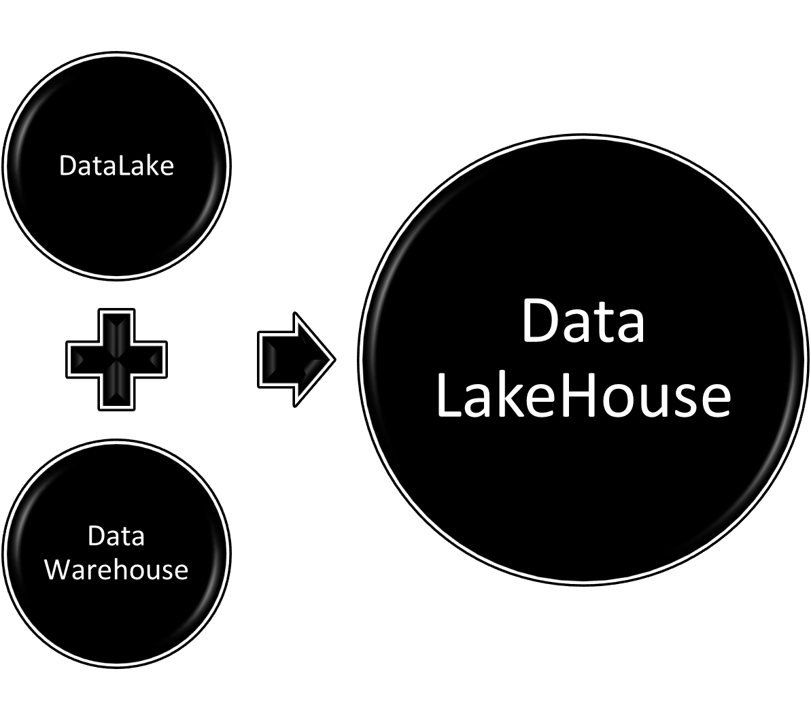
Figura 1 Data Lake x Data Warehouse x Data Lakehouse
Um Data Lakehouse é uma solução de armazenamento aberta e pode atender às necessidades de cientistas e engenheiros de dados, que realizam análises e processamentos mais profundos sobre os dados, bem como as necessidades de profissionais do data warehouse, que coletam e publicam dados para BI e relatórios.
O Data Lake possui uma arquitetura aberta e escalonável, que pode ser implementada on premises ou na nuvem, e pode armazenar dados de fontes diversas, em formatos diversos, desde dados estruturados (tabelas de banco de dados, planilhas do Excel), semiestruturados (arquivos XML, páginas da Web) até não estruturados (imagens, arquivos de áudio, tweets), em estado bruto, sem tratamento prévio, exatamente como eles são nas fontes, sem vincular à nenhuma necessidade específica inicialmente. À medida que surge a necessidade de uso desses dados, os objetivos vão sendo definidos.
Os usuários acessam e exploram livremente os dados no Data Lake, sem precisar movê-los para outro sistema, e isto acontece geralmente de forma ad-hoc. Com isto, os Data Lakes exigem governança, metadados técnicos e negociais e manutenção contínuos para que os dados possam ser utilizados em uma variedade de aplicativos, habilitando a análise de Big Data, consultas SQL, mineração de texto, análise de streaming, aprendizado de máquina, análises preditivas e outras formas de ação inteligente, tais como, o cruzamento de fontes distintas a fim de se obter insights e valiosas informações estratégicas, permitindo a construção de uma cultura de dados.
Arquitetura implantada (ATUAL)
Em 2017, a CAIXA iniciou o seu projeto de Big Data na iniciativa Arco Digital. A iniciativa não permitia aquisição de software devido a restrição de custo imposta à época.
Assim, dentre as opções dos softwares disponíveis e soluções opensource, foi selecionada a plataforma Hadoop, de distribuição Hortonworks: HortonWorks Data Platform (HDP) [7]. Para o storage foi identificado Dell EMC Isilon [8] [9] [10], que provê filesystem utilizando protocolo HDFS (Hadoop File System) [11], apropriado para utilização com Hadoop e compatível com HDP.
A figura a seguir apresenta uma visão da arquitetura do projeto de Big Data:
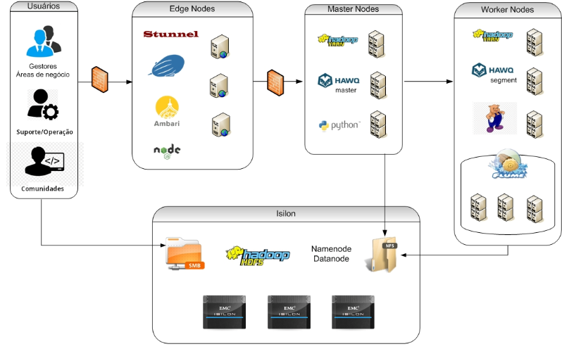
Figura 2 - Arquitetura Hadoop CAIXA- wikiPRD (corerj.caixa) [12]Data Lake
Para o Data Lake, a plataforma de armazenamento selecionada deveria comportar o volume de dados esperado. Dessa forma, a escolha do Hadoop se deu exatamente pelo seu filesystem HDFS, devido à sua capacidade de armazenamento de altos volumes, comportando dezenas de petabytes, com tamanhos de arquivos máximos em dezenas de terabytes (centenas em versões mais recentes).
Os processos de carga do Data Lake se valeram tanto da capacidade de volumetria quanto da escalabilidade horizontal do ambiente, para a construção do Data Lake em banco de dados pseudo-SQL Pivotal HDB HAWQ.
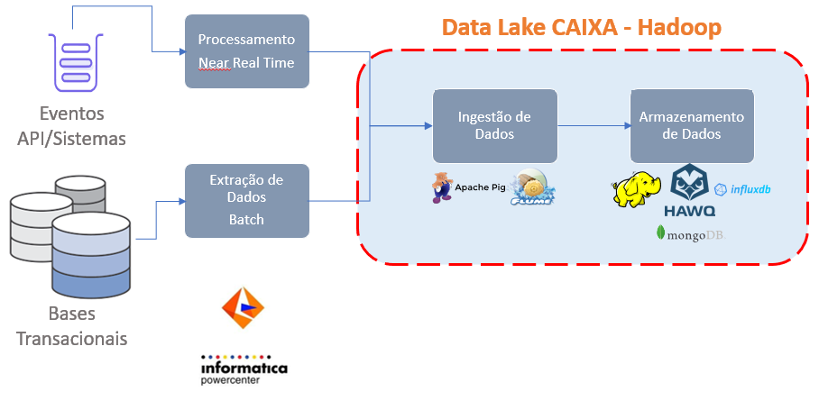
Figura 3 - Carga de dados por metodologia batch e por metodologia streaming
Pivotal HDB HAWQ
O Pivotal HDB HAWQ [12] [13] foi o banco de dados MPP [14] selecionado para construção do Data Lake.
Ingestão Batch
No processo de ingestão batch ocorre a ingestão de arquivos CSV [15] em codificação [16] UTF-8.
Além disso, os arquivos são processados com Apache Pig [17], com escalabilidade horizontal [18] e gerenciado por programa Python [19].
A principal ferramenta para extração de dados de sistemas transacionais é Informatica PowerCenter.
No anexo I, está definido o formato dos arquivos de carga.
Informatica PowerCenter e Informatica PowerExchange
A ferramenta Informatica PowerCenter [20] realiza o processo ETL [21] [22] [23] [24] de fontes de dados corporativas para produção de arquivos CSV e ingestão por rotinas de ingestão batch do Data Lake.
As fontes de dados atualmente utilizadas no projeto de Big data para o processo de ingestão batch são:
-
Sistemas Gerenciadores de Banco de Dados (SGBD) [25]: Microsoft SQL Server [26], Oracle [27] [28], IBM Db2 [29], etc.
-
Arquivos: VSAM [30], CSV, JSON [31] e XML [32].
-
Vide Arquitetura de Referência de ETL para maiores informações.
Ingestão Online
O processo de ingestão de streaming de dados é feito a partir de fila IBM MQ [33] utilizando Apache Flume [34].
As fontes de dados atualmente utilizadas no projeto de Big data para o processo de ingestão online são:
-
Sistemas
- Mensagens em fila IBM MQ para consumo por Apache Flume no ambiente Big Data publicadas por sistemas corporativos.
Arquitetura definida (FUTURA)
Atualmente, o projeto de Big Data CAIXA, no qual se encontra o Data Lake, se resume a infraestrutura e conjunto de ferramentas, e existe apenas em ambiente on premises. O objetivo é ampliar suas funcionalidades e se beneficiar das vantagens do ambiente em nuvem, principalmente aquelas relacionadas à análise e disponibilidade dos dados.
Dessa forma, a proposta é uma arquitetura implementada em nuvem pública, composta por solução que permita a governança dos dados, ingestão de dados batch e online, segregação de dados de acordo com a categoria atribuída, Analytics e ciência de dados para atender as necessidades de construção de modelos preditivos, e ferramentas de visualização, conforme apresentado na figura abaixo:
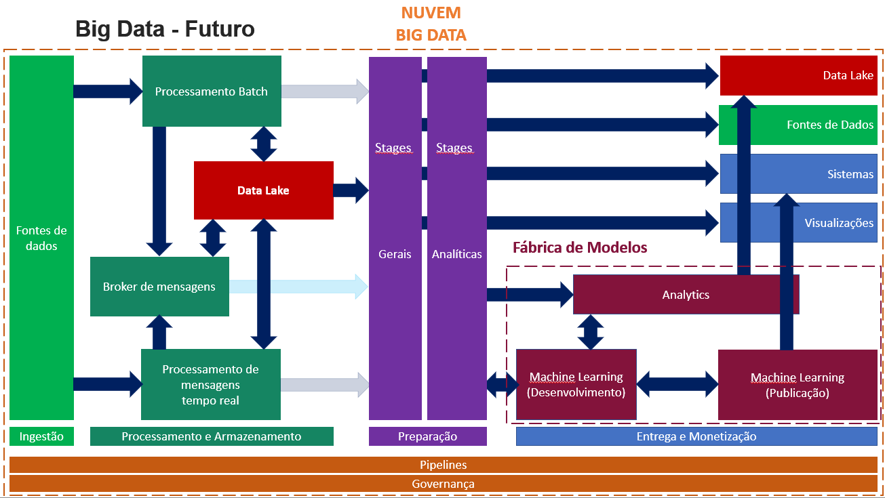
Figura 4 - Arquitetura futura para Big Data em NuvemDomínios de Dados
Na CAIXA, os dados são organizados por siglas de sistema e, conforme MN OR 016 [35], os gestores desses sistemas são os gestores dos dados neles contidos e estes são os únicos entes tacitamente autorizados para acesso aos dados desses sistemas. Isto caracteriza a existência de silos de dados, uma vez que o acesso aos dados de cada sistema é concedido apenas pelos gestores da informação e os entes autorizados (por esses gestores). Os sistemas representam um produto, conjunto de produtos ou aspectos específicos de uma linha de negócio, mas, um único sistema não contém todos os dados que representem uma linha ou área de negócio.
No entanto, apesar do conhecimento sobre os dados estar contido na área de negócio a eles associada, todo o processo de coleta, transformação e disponibilização dos dados, quando eles são requisitados, está sob a responsabilidade da TI, fazendo com que essas atividades estejam centralizadas em equipes técnicas e não de negócio.
Para contornar essa situação, é preciso promover a democratização dos dados e o empoderamento das áreas de negócio para tratar os seus dados de acordo com as suas necessidades, tornando-as mais autônomas, pois passam a ser responsáveis por todo o processo de obtenção, tratamento e disponibilização dos seus dados, reduzindo o tempo de manipulação desses dados e aumentando sua confiabilidade, uma vez que estão sendo tratados por quem realmente os compreendem. Com essa abordagem, obtém-se mais autonomia, inovação, qualidade, segurança e agilidade dentro de cada área de negócio, eliminando gargalos de demandas e promovendo processos de análises sobre os dados mais ágeis e assertivos, apenas por valer-se do conhecimento sobre os dados contido nas áreas de negócio.
Assim, no âmbito CAIXA, os dados não serão mais organizados somente por sistemas, mas por domínios de conhecimento1 também, ou domínios de negócio ou domínios de dados, e serão gerenciados e disponibilizados como produtos para os usuários que deles necessitam. Os domínios de conhecimento ou de negócio ou de dados serão definidos a partir das áreas de negócio da CAIXA, e o acesso a esses domínios de dados estará autorizado a todos os entes que requeiram suas informações, eliminando, assim, os silos de dados. Essa abordagem se utiliza da organização corporativa da CAIXA, composta pelas várias áreas ou linhas de negócios, sob responsabilidade das respectivas vice-presidências.
Além disso, a CAIXA adotou um novo modelo de atuação da TI, que busca potencializar as entregas de valor, ao considerar o cliente como o foco principal das soluções, e promover uma maior aproximação entre o negócio e a TI CAIXA, buscando agilidade na tomada de decisões, rapidez e eficiência nas entregas e um esforço direcionado por dados.
Assim, surgiu o conceito das comunidades CAIXA, que materializam esse modelo de atuação da TI, no qual cada comunidade representa logicamente uma ou mais áreas de negócio, no intuito de fortalecer o conhecimento e o empoderamento das áreas de negócio em um esforço multidisciplinar da TI e do Negócio. Consequentemente, todos os sistemas corporativos e seus respectivos dados, associadas às suas respectivas áreas de negócio, ficam sob responsabilidade das comunidades.
Atualmente, as Comunidade CAIXA são as apresentadas a seguir com alguns exemplos de sistemas do portfólio de cada Comunidade. Informações atualizadas e detalhadas podem ser obtidas em http://sibti.caixa/ [36].
| Comunidade | Responsabilidade | Portfólio (amostra) |
|---|---|---|
| Arrecadação, Convênios e Cobrança | Atender todas as demandas relacionadas aos sistemas corporativos que gerenciam dados relacionados à arrecadação, convênios e cobrança | SIACC - Sistema de agendamento de compromisso cliente SICOB - Sistema de cobrança bancária |
| Câmbio, Investimentos e Mercado de Capitais | Atender todas as demandas relacionadas aos sistemas corporativos que gerenciam dados relacionados a investimentos e mercados de capitais | SIMEX - Sistema de Movimentação de Recursos Externos SISAG - Sistema de Automação de Produtos e Serviços de Agências |
| Canais Digitais | Atender todas as demandas relacionadas aos sistemas corporativos que gerenciam dados relacionados a canais digitais | SIMAI - ATM Inovador SINDA - Sistema de Negócios Ágeis Digitais |
| Canais Físicos | Atender todas as demandas relacionadas aos sistemas corporativos que gerenciam dados relacionados a canais físicos | SILCR - Sistema de Limites deN Crédito Rotativo SINPC - Novo Portfólio Caixa |
| Clientes | Atender todas as demandas relacionadas aos sistemas corporativos que gerenciam dados relacionados a clientes | SICLI - Sistema Cliente CAIXA SIMTR - MATRIX - Digitalização de Documentos |
| Contratações e Logística | Atender todas as demandas relacionadas aos sistemas corporativos que gerenciam dados relacionados a contratações e logística | SICFS - Sistema de Contratos de Fábrica de Software SIPAT - Sistema de Administração de Imóveis Patrimoniais e de Terceiros |
| Crédito Comercial e Agronegócio | Atender todas as demandas relacionadas aos sistemas corporativos que gerenciam dados relacionados a crédito comercial e agronegócio | SIAPI - Sistema de Aplicação SIPEN - Sistema de Penhor |
| Depósitos e Captação | Atender todas as demandas relacionadas aos sistemas corporativos que gerenciam dados relacionados a depósitos e captação | SID52 - Sistema Consolidador de Lançamentos e Movimentações de
Depósitos SIRTA - Sistema de Recebimento e Devolução de Tarifas |
| Estruturantes de TI | Atender todas as demandas relacionadas aos sistemas corporativos que gerenciam dados relacionados a estruturação da TI | SIATR - Sistema de Autoatendimento Reestruturado SIMTX - Novo Multicanal PMAC |
| Financeiro e Controladoria | Atender todas as demandas relacionadas aos sistemas corporativos que gerenciam dados relacionados a financeiro e controladoria | SINAF - Sistema de Interface da Área Financeira SIPLO - Sistema de Planejamento Econômico e Financeiro |
| Fomento e Depósitos Judiciais | Atender todas as demandas relacionadas aos sistemas corporativos que gerenciam dados relacionados a fomento e depósitos judiciais | SIAPF - Sistema de Acompanhamento dos Programas de Fomento SIGOP - Sistema de Controle de Operações de Repasse |
| Fundos de Governo | Atender todas as demandas relacionadas aos sistemas corporativos que gerenciam dados relacionados a fundos de governo | SIFUG - Novo Sistema do FGTS SINFS - Núcleo de Fundos e Seguros |
| Habitação | Atender todas as demandas relacionadas aos sistemas corporativos que gerenciam dados relacionados a habitação | SIAOI - Sistema de Administração de Operações Imobiliárias SIOPI - Sistema de Operações Imobiliárias |
| Institucional | Atender todas as demandas relacionadas aos sistemas corporativos que gerenciam dados relacionados a instituição | SIJUR - Sistema Juridico da Caixa SIOUV - Sistema de Ouvidoria Interna e Externa |
| Loterias e Canais Parceiros | Atender todas as demandas relacionadas aos sistemas corporativos que gerenciam dados relacionados a loterias e canais parceiros | SILCE - Sistema de Loterias em Canais Eletrônicos SISPL - Sistema de Serviços de Processamentos Lotéricos |
| Meios de Pagamento | Atender todas as demandas relacionadas aos sistemas corporativos que gerenciam dados relacionados a meios de pagamentos | SIMPI - Sistema de Mensageria de Pagamentos Instantâneos SIPCS - Sistema de Processamento de Cartões de Credito e Serviços |
| Pessoas | Atender todas as demandas relacionadas aos sistemas corporativos que gerenciam dados relacionados a pessoas | SIPON - Sistema de Ponto Eletrônico SISRH - Sistema de Recursos Humanos |
| Programas Sociais | Atender todas as demandas relacionadas aos sistemas corporativos que gerenciam dados relacionados a programas sociais | SIBES - Sistema de Benefícios Sociais SIISO - Cadastro NIS |
| Risco, Compliance, Inadimplência, Linhas de Defesa e Adimplência | Atender todas as demandas relacionadas aos sistemas corporativos que gerenciam dados relacionados a risco, compliance, linhas de defesa e (in)adimplência | SIAPD - Sistema Autorizador para Proteção de Dados SIRIC - Sistema de Mensuração de Risco de Crédito |
| Segurança | Atender todas as demandas relacionadas aos sistemas corporativos que gerenciam dados relacionados a segurança | SIAAS - Sistema de Autenticação e Autorização de Sistemas SIGAL - Sistema de Gerenciamento de Identidade |
Tabela 1 - Comunidade x Responsabilidade x Portfólio
Além da organização por área(s) de negócio, as comunidades CAIXA possuem equipes multidisciplinares que atuam dentro de cada comunidade e, dentre os perfis definidos há o dono do produto, que é o gestor dos dados gerados pelos sistemas corporativos, que fazem parte do portifólio de cada comunidade.
Diante do exposto, e buscando aproveitar-se de toda a organização, estrutura de perfis e modelo de atuação das Comunidade CAIXA, os domínios de dados serão definidos com base nas linhas de negócio atendidas por cada Comunidade CAIXA.
A grande vantagem dessa estratégia é diluir o esforço de construção/manutenção de pipelines entre os sistemas corporativos e o data lake, permitir que a evolução dos dados entre Bronze, Prata e Ouro possuam processo de gestão de mudança e validação do gestor dos dados. Além disso, utilizar as definições de cada comunidade CAIXA, segmentar os dados das áreas de negócios que elas abrangem, identificar seus portifólios de sistemas e, dos perfis de atuação, principalmente aqueles definidos para a gestão dos dados, tais como, o Dono do Produto e o Líder de Negócio, que terão um papel importante na ratificação do processo de obtenção, tratamento, análise e disponibilização dos dados, além de serem os responsáveis por conceder os acessos requeridos aos dados pelos demais domínios de dados.
Essa estratégia permite mais flexibilidade na manutenção dos domínios de dados, no caso de alguma reestruturação das comunidades, ao incluir ou excluir alguma(s) área(s) de negócio. Para exemplificar, a comunidade Arrecadação, Convênios e Cobrança abrange 3 áreas de negócio, então, serão criados 3 domínios de dados, a saber: domínio de Arrecadação, domínio de Convênios e domínio de Cobrança. Dessa forma, caso alguma área de negócio seja manejada para uma outra comunidade não haverá manutenção na definição do respectivo domínio de dados.
Assim, serão definidos os domínios de dados a seguir:
| Domínio de Dados | Comunidade |
|---|---|
| Adimplência | Risco, Compliance, Inadimplência, Linhas de Defesa e Adimplência |
| Agronegócio | Crédito Comercial e Agronegócio |
| Arrecadação | Arrecadação, Convênios e Cobrança |
| Câmbio | Câmbio, Investimentos e Mercado de Capitais |
| Canais Digitais | Canais Digitais |
| Canais Físicos | Canais Físicos |
| Canais Parceiros | Loterias e Canais Parceiros |
| Captação | Depósitos e Captação |
| Clientes | Clientes |
| Cobrança | Arrecadação, Convênios e Cobrança |
| Compliance | Risco, Compliance, Inadimplência, Linhas de Defesa e Adimplência |
| Contratações | Contratações e Logística |
| Controladoria | Financeiro e Controladoria |
| Convênios | Arrecadação, Convênios e Cobrança |
| Crédito Comercial | Crédito Comercial e Agronegócio |
| Depósitos | Depósitos e Captação |
| Depósitos Judiciais | Fomento e Depósitos Judiciais |
| Estruturantes de TI | Estruturantes de TI |
| Financeiro | Financeiro e Controladoria |
| Fomento | Fomento e Depósitos Judiciais |
| Fundos de Governo | Fundos de Governo |
| Habitação | Habitação |
| Inadimplência | Risco, Compliance, Inadimplência, Linhas de Defesa e Adimplência |
| Institucional | Institucional |
| Investimentos | Câmbio, Investimentos e Mercado de Capitais |
| Linhas de Defesa | Risco, Compliance, Inadimplência, Linhas de Defesa e Adimplência |
| Logística | Contratações e Logística |
| Loterias | Loterias e Canais Parceiros |
| Meios de Pagamento | Meios de Pagamento |
| Mercado de Capitais | Câmbio, Investimentos e Mercado de Capitais |
| Pessoas | Pessoas |
| Programas Sociais | Programas Sociais |
| Risco | Risco, Compliance, Inadimplência, Linhas de Defesa e Adimplência |
| Segurança | Segurança |
Tabela 2 - Domínios de dados e Comunidades responsáveis.
Dentro de cada domínio de dados existe mais de uma camada de dados, representando as etapas de obtenção dos dados, diretamente dos sistemas corporativos, de manipulação desses dados no intuito de atender às necessidades do próprio domínio de dados e dos demais domínios e de geração de informações a partir desses dados.
De maneira geral, apresentamos a seguir uma representação gráfica para exemplificar a criação de um dos domínios de dados apresentados acima e as etapas de obtenção de informações dentro do domínio, além do compartilhamento de dados entre domínios.
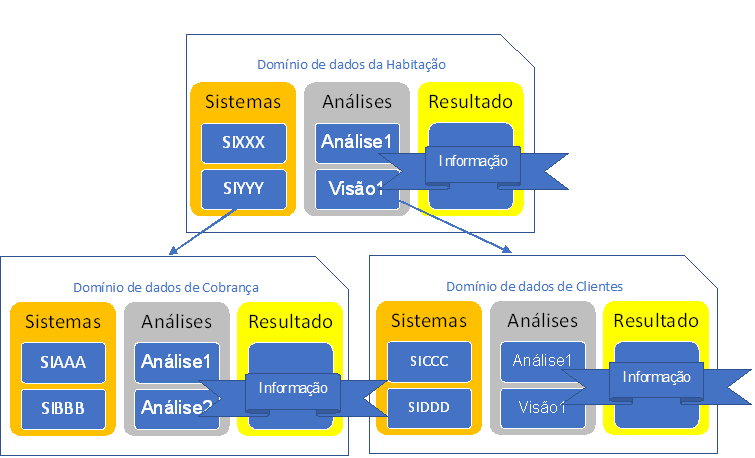
Figura 5 Exemplo de representação gráfica do domínio de dados da Habitação e seus compartilhamentosCada domínio de dados gera as análises de que precisa e as visões sobre os dados que lhe competem, necessárias para outros domínios de dados, a partir dos dados dos sistemas corporativos associados à área de negócio do domínio, além de produzirem informações de valor para a própria área de negócio. No caso do exemplo acima, o domínio de dados da habitação 1) disponibilizou alguns dados do sistema SIYYY, de sua competência, para o domínio de cobrança realizar alguma ação sobre contratos de financiamento habitacional; 2) produziu uma análise do quantitativo de contratos habitacionais mensais, que será utilizada para a geração da informação desejada, e uma visão dos clientes com os maiores financiamentos concedidos, que foi disponibilizada para o domínio de dados de clientes e, por fim, 3) gerou uma informação referente à evolução da concessão de financiamento habitacional em relação ao mês anterior, que faz parte do indicador de eficiência do processo de crédito habitacional. Esse comportamento pode ser visto nos demais domínios de dados, de acordo com as suas necessidades e demandas por análises, visões e geração de informações. Neste exemplo, o domínio de dados da habitação gerou apenas uma visão de análise para o domínio de dados de clientes, mas poderia ter gerado outras visões para o próprio domínio de clientes ou para outro domínio de dados. Da mesma forma, o domínio de dados da habitação gerou apenas uma análise para a geração da informação desejada, mas poderiam ser necessárias outras análises, como também poderia ser necessária a geração de outras informações, ou seja, tudo depende das necessidades de cada domínio de dados.
Na prática, de forma geral, os dados de conhecimento do domínio ZZZ conterão todas as informações relacionadas a área de negócio ZZZ. Dessa forma, num mesmo domínio de dados estarão concentradas as informações necessárias para sua análise.
-
O conhecimento do domínio ZZZ terá nome simplificado para domínio ZZZ.
- Por exemplo, os dados da área de negócio de crédito estariam organizados num domínio de crédito. Da mesma forma, os dados da área de negócio da habitação estariam organizados num domínio de habitação e assim por diante.
Para a implementação dos objetos associados aos domínios de dados, sugere-se a utilização dos nomes dos domínios de dados de forma abreviada, para evitar problemas relacionados à limitação física de nomes para a criação de objetos.
Assim, serão definidas as abreviações dos domínios de dados a seguir:
| Domínio de Dados | Abreviação |
|---|---|
| Adimplência | ADMA |
| Agronegócio | AGRNO |
| Arrecadação | ARCDO |
| Câmbio | CMBO |
| Canais Digitais | CNL _DGTL |
| Canais Físicos | CNL_FISIC |
| Canais Parceiros | CNL_PRCRO |
| Captação | CPTCO |
| Clientes | CLNTE |
| Cobrança | CBRNA |
| Compliance | CNFME |
| Contratações | CNTCO |
| Controladoria | CNTLRA |
| Convênios | CNVNO |
| Crédito Comercial | CRDTO_CMRCL |
| Depósitos | DPSTO |
| Depósitos Judiciais | DPSTO_JDCL |
| Estruturantes de TI | ESTTE_TI |
| Financeiro | FNNCO |
| Fomento | FMNTO |
| Fundos de Governo | FNDO_GVRNO |
| Habitação | HBTCO |
| Inadimplência | INDMA |
| Institucional | INSTL |
| Investimentos | INVSO |
| Linhas de Defesa | LNHA_DFSA |
| Logística | LGTCA |
| Loterias | LTRIA |
| Meios de Pagamento | MEIO_PGMNO |
| Mercado de Capitais | MCDO_CPTL |
| Pessoas | PSA |
| Programas Sociais | PRGRA_SCL |
| Risco | RSCO |
| Segurança | SGRNA |
Tabela 3 - Domínios de dados e abreviações.
Categorização da informação
No Data Lake, estão disponíveis:
-
Réplicas de dados de sistemas sem quaisquer alterações, ou seja, dados brutos;
-
Dados de uso privado e proprietário de áreas de negócio;
-
Dados disponíveis para uso de diversas áreas de negócios
-
Dados derivados de análise;
-
Etc.
Nesta arquitetura de referência, propomos um novo modelo de categorização desses dados que hoje estão:
-
Ou, organizados em siglas;
-
Ou, como réplicas;
-
Ou, como resultados de análises;
-
Ou, organizados por domínios de dados (ou, de negócio);
-
Etc.
Definimos três categorias de dados no Data Lake:
-
Bronze;
-
Prata;
-
Ouro.
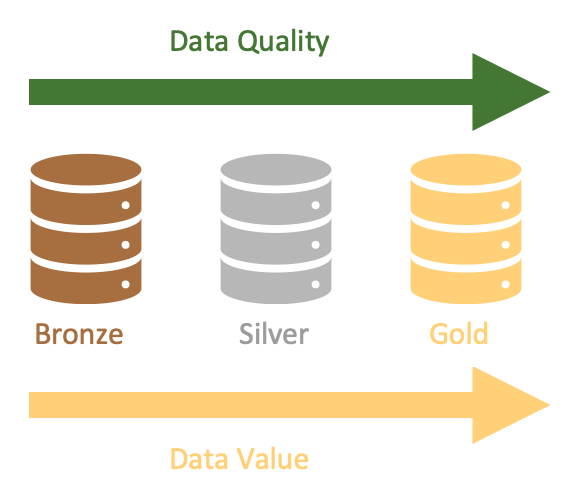
Figura 6 - Categorias e "promoção" por enriquecimento e resultado negocial.
As categorias estão organizadas de forma crescente e evolutiva de bronze, prata até ouro.
Evoluindo com:
-
Análises de crescimento paulatino de complexidade e de especialização técnica/negocial;
-
Aplicação de conhecimento de domínio [37];
-
Aplicação de conhecimento de domínio de dados (ou, negócio);
-
Cruzamento entre diversas fontes:
-
No mesmo domínio de dados;
-
Entre diversos domínios de dados.
-
-
Qualificação de dados;
-
Documentação:
-
Metadados técnicos e negociais;
-
Linhagem;
-
Transformações realizadas;
-
Propósito da informação existente;
-
Propósito da nova informação criada;
-
Responsáveis;
-
Etc.
-
-
Aplicação de metodologias de machine learning (ML) [38] e inteligência artificial (IA);
-
Etc.
A categorização permite reconhecer o propósito negocial e técnico das informações. Além dos níveis de qualidade e esforço para sua produção (por meio de documentação adequada: metadados, linhagem, transformações etc.).
Bronze
Dados de categoria bronze representam exatamente os existentes nas fontes de dados: nos sistemas de origem. Também sendo denominados dados brutos; ou seja, sem quaisquer alterações.
São extraídos dos sistemas corporativos por meio de processos ETL (Extract-Transform-Load) e replicados no Data Lake.
-
Por exemplo, os dados do SID01 no Data Lake correspondem exatamente aos dados existentes no sistema corporativo SID01.
- Deste modo, os dados do SID01 no Data Lake são de categoria bronze.
-
Todas as informações de sistemas corporativos disponíveis no Data Lake são replicadas dos sistemas corporativos.
- Deste modo, todas essas informações são da categoria bronze.
Documentação
As seguintes informações precisam estar disponíveis e devem ser providas pela Comunidade responsável pelos processos ETL:
-
Metadados técnicos;
-
Metadados negociais são desejáveis na categoria bronze e são obrigatórios na categoria prata.
-
Documentação dos processos ETL desenvolvidos;
-
Linhagem de dados contendo as origens, os destinos e as transformações;
-
Além de quaisquer outras informações relevantes para linhagem;
-
Para rastreabilidade do ciclo de vida e transformações dos dados.
-
Devem estar identificados:
-
O gestor da informação;
-
A Comunidade responsável pela gestão e manutenção dos processos ETL para carga dos dados.
Todos os objetos replicados devem ser adicionados ao modelo de dados do SILDC (Sistema do Lago de Dados CAIXA).
Requisitos
Qualidade
- Os dados de categoria bronze devem ser submetidos a uma validação mínima de qualidade: validação dos tipos definidos físico para informação. Por exemplo, se campos deveriam conter somente data calendário, devem ser validados para conter somente datas válidas etc.
-
Os dados serão carregados no Data Lake com as inconsistências identificadas sem correções no Data Lake;
- Inconsistências na validação, ou de outra forma, encontradas serão submetidas ao sistema de origem para correção.
-
Os dados bronze no Data Lake receberão posteriormente as correções por meio da replicação sempre que essas forem aplicadas às origens de dados.
-
Além de validação de qualidade e completude dos metadados técnicos e negociais.
Organização
As réplicas de dados da sigla de sistema SIZZZ serão armazenadas no database schema [39] sizzz.
A sigla de sistema é usada como nome do schema em que o nome do schema sempre será representado em caracteres minúsculos.
Os nomes não devem conter acentos nem cê-cedilha.
Todos os dados da categoria bronze de uma sigla devem estar contidos nesse schema.
Por exemplo (nomes hipotéticos):
-
schema siapi para SIAPI;
-
schema siapx para SIAPX;
-
schema sizzz para SIZZZ.
| Sigla do sistema | Schema no Data Lake |
|---|---|
| SIAPI | siapi |
| SIAPX | siapx |
| SIZZZ | sizzz |
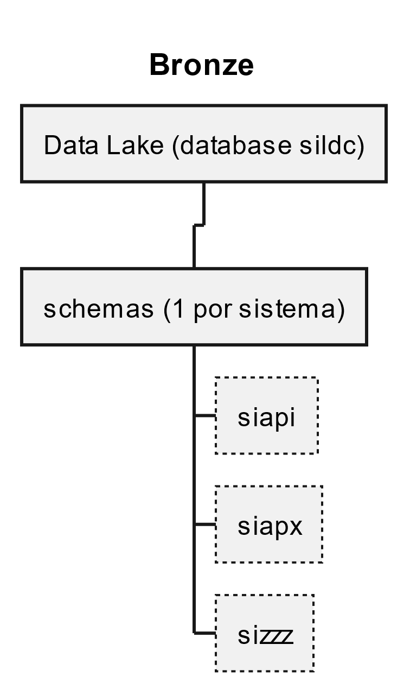
Nomenclatura de objetos de dados
Por tratar-se de replicação de dados, os objetos replicados deverão apresentar exatamente a mesma nomenclatura dos objetos originais.
Ou seja, as tabelas replicadas deverão apresentar exatamente os mesmos nomes das tabelas originais.
Por exemplo (nomes hipotéticos):
-
zzzTBnnn_t para zzzTBnnn_t
-
zzzvwnnn_t para zzzvwnnn_t
-
zzzTBnnn_t para zzzTBnnn_t
| Tabela Original | Tabela Replicada |
|---|---|
| zzzTBnnn_t | zzzTBnnn_t |
| zzzvwnnn_t | zzzvwnnn_t |
| zzzTBnnn_t | zzzTBnnn_t |
Concessão de acesso
A concessão de acesso se dará por meio de solicitação de inclusão em grupo de acesso no Acesso Lógico (SIGAL) (MN TE 203, 2022) [40].
Devem ser atendidos o MN TE 159 (Matriz de Perfis de Acesso a Sistemas – MPAS) [41] e o MN TE 203 (Gerenciamento de Identidade e Acesso Lógico).
Considerando o sistema SIZZZ cujos dados bronze estarão disponíveis num database schema sizzz, teremos:
-
Para cada database schema sizzz, será criado um grupo de acesso conforme MN TE 203.
- O Gestor da Informação é responsável por criar, definir e manter a Matriz Auxiliar de Perfis (MAP) e a Matriz de Perfis de Acesso a Sistemas (MPAS) para esse(s) grupo(s) de acesso; conforme MN TE 159.
-
Será criado grupo LDC_SIZZZ_PERFIL_001 (exemplo de nome) para autorização de acesso aos dados no schema sizzz contendo os dados bronze;
-
Com a seguinte nomenclatura para os grupos:
-
Os nomes de grupos sempre serão representados em caracteres minúsculos.
-
Os nomes não devem conter acentos nem cê-cedilha.
-
LDC_SCHEMA_PERFIL_nnn
-
O prefixo LDC_ é obrigatório por tratar-se de grupo de acesso para o Data Lake (SILDC);
-
O SCHEMA deve ser o nome do schema com os dados replicados ao qual será aplicado o grupo de acesso;
-
O sufixo nnn deve ser substituído por número sequencial com 3 dígitos crescente para cada novo grupo de acesso ao schema.
- O sufixo 001 (número 1) é reservado para o grupo inicial que autoriza acesso read-only aos objetos do sistema.
-
-
Por exemplo (nomes hipotéticos):
-
grupo LDC_SIAPI_PERFIL_001 para siapi
-
grupo LDC_SIAPX_PERFIL_002 para siapx
-
-
-
| Schema | Sequencial | Nome do grupo de acesso |
|---|---|---|
| siapi | 1 | LDC_SIAPI_PERFIL_001 |
| siapx | 2 | LDC_SIAPX_PERFIL_002 |
| sizzz | nnn | LDC_SIZZZ_PERFIL_nnn |
-
Com a seguinte configuração do grupo:
-
A concessão de acesso deverá ser sob demanda, pois requer revisão do Gestor da Informação (MN TE 203, 2022);
-
O grupo será configurado para requerer dupla autorização;
-
Primeiro, qualquer solicitação deverá ser autorizada pelo Gestor do Acesso Lógico (MN TE 203, 2022) do solicitante;
-
Por fim, também deverá ser autorizada pelo Gestor de Informação.
-
-
-
O grupo autorizará acesso read-only (somente leitura) a todos os objetos contidos no schema sizzz;
Finalmente, deverá ser solicitado à equipe de Governança do Data Lake, a implantação do grupo LDC_ZZZ_PERFIL_nnn na infraestrutura do Data Lake de modo que esteja ativo para uso do Acesso Lógico.
Processo
Iniciativas de ingestão de dados de categoria bronze no Data Lake adotam um processo simplificado:
-
Criação de um schema sizzz (nome de exemplo) no Data Lake se não existir;
-
Extração de dados de sistemas sem qualquer tipo de alteração;
-
Carga dos dados extraídos no schema sizzz no Data Lake.
Criação de schema sizzz
O principal ator é a governança do Data Lake que coordenará as atividades necessárias para criação das estruturas (schema) no qual os objetos serão replicados.
Com uma sequência [42] de atividades descritas a seguir:
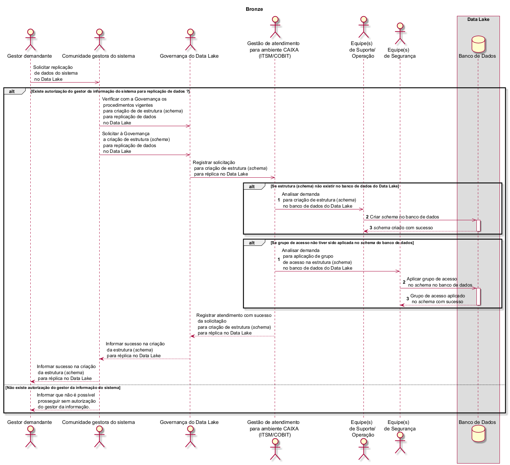
Figura 7 - Diagrama de sequência para criação da estrutura (schema) necessária para replicação de dados no Data Lake.
Extração e carga de dados
Com o seguinte processo para extração e carga de dados em um schema pré-existente.
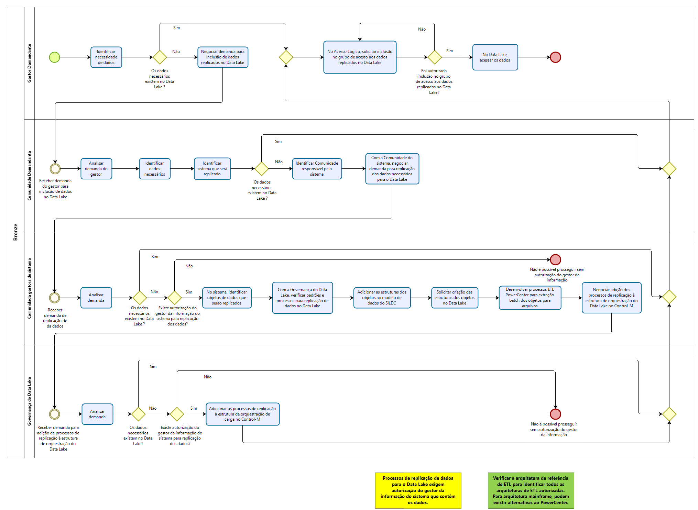
Figura 8 - Processo para ingestão de novos dados de categoria bronze (dados brutos) no Data Lake.
O principal ator é a comunidade gestora do sistema que identifica os objetos que serão replicados e desenvolve os processos ETL necessários.
Com uma sequência [42] de atividades descritas a seguir:
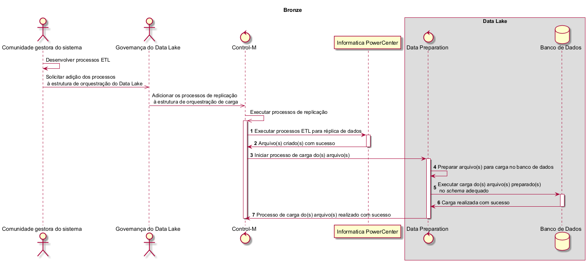
Figura 9 - Diagrama de sequência para ingestão de novos dados de categoria bronze (dados brutos) no Data Lake.
Prata
Dados de categoria prata representam uma evolução da categoria bronze, com a aplicação de conhecimento de domínio de dados e de etapa(s) de transformação sobre os dados, decorrentes das regras negociais aplicadas para a obtenção do dado prata.
-
Ou, são produzidos a partir da análise de dados de, no mínimo, uma fonte de dados de categoria bronze relacionada ao domínio de dados;
- As demais fontes podem ser de qualquer domínio de dados e de qualquer categoria: bronze, prata ou ouro.
-
Ou, podem ser produzidos a partir de, no mínimo, uma fonte de dados de categoria prata do mesmo domínio de dados;
- As demais fontes podem ser de qualquer domínio de dados e de qualquer categoria: bronze, prata ou ouro.
São produzidos para atender necessidade e objetivos de domínios de dados. Desta forma, são organizados por domínio de dados ao invés de sigla de sistema.
Além disso, agregam valor com:
-
Adição de metadados negociais se não existirem nas fontes de categoria bronze;
-
Aplicação de conhecimento do domínio de dados para interpretação e enriquecimento dos dados, resultando em visões negociais;
-
Publicação desses dados num domínio de dados para uso de quaisquer áreas autorizadas, garantindo maior disponibilidade da informação;
Dados que não forem disponibilizados para outros domínios não serão categorizados, pois se trata de dados de uso proprietário e exclusivo do domínio em que foram criados.
Somente serão classificados como categoria prata se estiverem no Data Lake com disponibilidade para outros domínios de dados. As categorias se destinam a dados disponíveis para outros domínios.
Documentação
As seguintes informações precisam estar disponíveis e devem ser providas pela Comunidade responsável pelos processos ETL:
-
Metadados técnicos;
-
Metadados negociais;
-
Com identificação de relação da informação e de relação negocial > ao menos a nível entidade/tabela e coluna.
-
Por exemplo:
-
Identificação que determinada tabela se destina a representação de contratos;
-
Ou, que determinada coluna apresenta valores aproximados, ao invés de valores exatos.
-
-
-
-
Documentação dos processos ETL desenvolvidos: scripts SQL, processos, rotinas etc.;
-
Linhagem de dados contendo as origens, os destinos e as transformações;
-
Além de quaisquer outras informações relevantes para linhagem;
-
Para rastreabilidade do ciclo de vida e transformações dos dados.
-
Devem estar identificados:
-
O gestor da informação;
-
O gestor do domínio de dados;
-
O(s) gestor(es) responsável(is) pela preparação de cada dado prata disponível, seja uma tabela ou um conjunto de tabelas;
-
A Comunidade responsável pela gestão e manutenção dos processos ETL para carga dos dados.
Todos os objetos criados devem ser adicionados ao modelo de dados do SILDC (Sistema do Lago de Dados CAIXA).
Requisitos
Qualidade
Deve atender no mínimo as seguintes 3 dimensões de qualidade conforme MN OR 188 [43]:
-
Unicidade – “garantia que o dado é único e exclusivo na CAIXA, seja em termos conceituais ou de conteúdo.” (MN OR 188, 2022);
-
Integridade – “conceito que geralmente se refere à consistência entre objetos de dados em SGDBs através de uma chave referencial entre eles ou à consistência interna dentro de um conjunto de dados para que não haja partes faltando.” (MN OR 188, 2022);
-
Interpretabilidade – “o quanto o dado está em linguagem, símbolo e unidade adequados, e possui dimensões claras.” (MN OR 188, 2022).
Os administradores de dados (ADs) devem ser envolvidos:
-
Para análise de possíveis enriquecimentos nos objetos de dados (tabelas) produzidos. Por exemplo:
-
Enriquecimento na organização das tabelas ou estrutura física (colunas, tipos etc.);
-
Enriquecimento de metadados.
-
-
Na adição dos objetos no modelo de dados do Data Lake;
-
Não serão aplicadas nem requeridas as formas normais de modelagem relacional.
- Exceto em situações em que forem identificados ganhos semânticos (entendimento) ou de desempenho.
Organização
Os dados serão armazenados em database schemas organizados por domínio de dados.
-
O domínio de dados é usado como nome do schema em que o nome do schema sempre será representado em caracteres minúsculos.
-
Serão utilizadas as abreviações dos domínios de dados.
-
Os nomes não devem conter acentos nem cê-cedilha.
-
O nome do schema será prefixado com p_ (p sublinhado) identificando que os dados são da categoria prata.
-
Os nomes de schema devem ser abreviados conforme MN TE 074 [44].
-
Todos os dados prata de um domínio de dados devem estar contidos nesse schema.
-
Por exemplo (nomes hipotéticos):
-
schema p_cptco para domínio de dados de captação;
-
schema p_dpsto para domínio de dados de depósitos;
-
schema p_zzz para domínio de dados ZZZ (zzz = nome do domínio abreviado).
-
| Domínio de Dados | Schema no Data Lake |
|---|---|
| Captação | p_cptco |
| Depósitos | p_dpsto |
| ZZZ | p_zzz |
Nomenclatura de objetos de dados
Dados prata tratam de novos dados ou novas interpretações de dados existentes. Desta forma, trata-se de novos objetos.
De modo a manter padrão corporativo de nomenclatura, os nomes dessas novas tabelas devem respeitar o MN TE 074 [44] com a seguinte alteração.
-
O identificador owner não será mais o nome zzz do sistema SIZZZ;
-
O identificador owner será p;
-
Para o schema p_zzz, teríamos o owner p, onde zzz é a abreviação do nome do domínio de dados.
Por exemplo (nomes hipotéticos):
-
pTBnnn_cptco_t para schema p_cptco (domínio de dados captação).
-
pTBnnn_dpsto_t para schema p_dpsto (domínio de dados depósitos).
-
pTBnnn_zzz_t para schema p_zzz (domínio de dados zzz).
| Schema | Template de tabela (exemplo) |
|---|---|
| p_cptco | pTBnnn_cptco_t |
| p_dpsto | pTBnnn_dpsto_t |
| p_zzz | pTBnnn_zzz_t |
Concessão de acesso
A concessão de acesso se dará por meio de solicitação de inclusão em grupo de acesso no Acesso Lógico (SIGAL) (MN TE 203, 2022) [40].
Devem ser atendidos o MN TE 159 (Matriz de Perfis de Acesso a Sistemas – MPAS) [41] e o MN TE 203 (Gerenciamento de Identidade e Acesso Lógico).
Considerando o domínio de dados ZZZ cujos dados prata estarão disponíveis num database schema p_zzz, teremos:
-
Para cada database schema p_zzz, será criado um grupo de acesso conforme MN TE 203.
- O Gestor do Domínio de Dados na Comunidade do Domínio de Dados é responsável por criar, definir e manter a Matriz Auxiliar de Perfis (MAP) e a Matriz de Perfis de Acesso a Sistemas (MPAS) para esse(s) grupo(s) de acesso; conforme MN TE 159.
-
Será criado grupo LDC_P_ZZZ_PERFIL_001 (exemplo de nome) para autorização de acesso aos dados no schema p_zzz (zzz = nome abreviado do domínio) contendo os dados prata;
-
Com a seguinte nomenclatura para os grupos:
-
Os nomes de grupos sempre serão representados em caracteres minúsculos.
-
Os nomes não devem conter acentos nem cê-cedilha.
-
LDC_SCHEMA_PERFIL_nnn
-
O prefixo LDC_ é obrigatório por tratar-se de grupo de acesso para o Data Lake (SILDC);
-
O SCHEMA é o nome do schema do domínio de dados;
-
O identificador _PERFIL_ é obrigatório e deve ser substituído por _PFL_;
-
O sufixo nnn deve ser substituído por número sequencial com 3 dígitos crescente para cada novo grupo de acesso ao schema.
- O sufixo 001 (número 1) é reservado para o grupo inicial que autoriza acesso read-only aos objetos do sistema.
-
-
Por exemplo (nomes hipotéticos):
-
grupo LDC_P_CPTCO_PFL_001 para p_cptco
-
grupo LDC_P_DPSTO_PFL_002 para p_dpsto
-
-
-
| Schema | Sequencial | Nome do grupo de acesso |
|---|---|---|
| p_cptco | 1 | LDC_P_CPTCO_PFL_001 |
| p_dpsto | 2 | LDC_P_DPSTO_PFL_002 |
| p_zzz | nnn | LDC_P_ZZZ_PFL_nnn |
-
Com a seguinte configuração do grupo:
-
A concessão de acesso deverá ser sob demanda, pois requer revisão do Gestor da Informação (MN TE 203, 2022);
-
O grupo será configurado para requerer dupla autorização;
-
Primeiro, qualquer solicitação deverá ser autorizada pelo Gestor do Acesso Lógico (MN TE 203, 2022) do solicitante;
-
Por fim, também deverá ser autorizada pelo Gestor de Informação.
-
-
-
O grupo autorizará acesso read-only (somente leitura) a todos os objetos contidos no schema p_zzz;
Finalmente, deverá ser solicitado à equipe de Governança do Data Lake, a implantação do grupo LDC_P_ZZZ_PERFIL_nnn na infraestrutura do Data Lake de modo que esteja ativo para uso do Acesso Lógico.
Processo
Iniciativas de preparação e carga de dados de categoria prata no Data Lake adotam um processo simplificado:
-
Criação de um schema p_zzz (nome de exemplo) no Data Lake se não existir;
-
Definição pelo gestor de script SQL para processamento dos dados;
-
Carga dos dados processados no schema p_zzz no Data Lake.
Criação de schema p_zzz (zzz = nome do domínio)
O principal ator é a Governança do Data Lake que coordenará as atividades necessárias para criação das estruturas (schema) no qual os dados serão carregados.
Com uma sequência de atividades descritas a seguir:
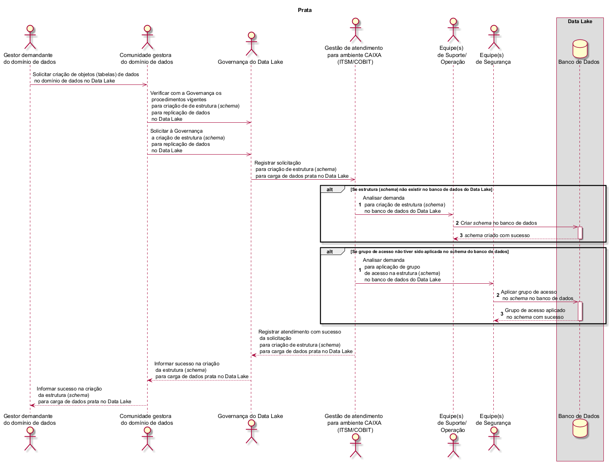
Figura 10 - Diagrama de sequência para criação da estrutura (schema) necessário para disponibilização de dados no Data Lake.
Preparação e carga de dados
O principal ator é o gestor do domínio de dados que analisa e que desenvolve o processo de construção dos dados de categoria prata.
Com o seguinte processo para preparação e carga de dados num schema pré-existente.
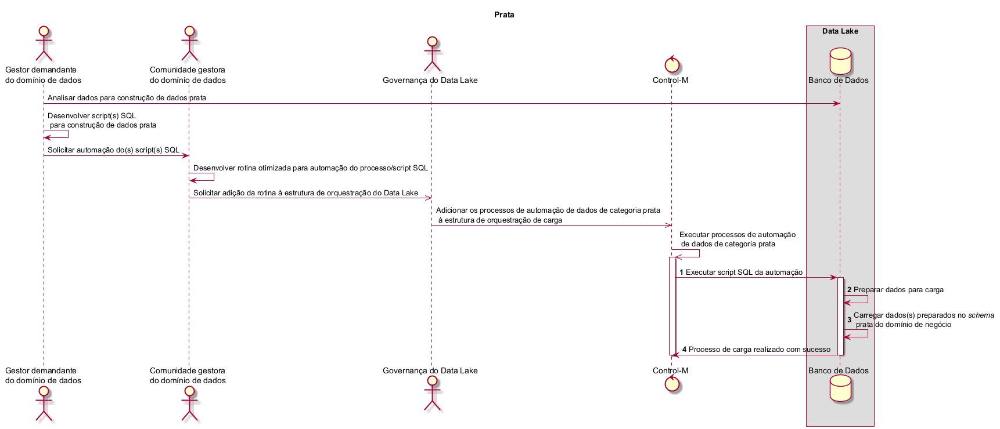
Figura 11 - Diagrama de sequência para preparação e disponibilização de novos dados de categoria prata no Data Lake.
Ouro
Dados de categoria ouro representam uma evolução da categoria prata e bronze. Com critérios mais rígidos de qualidade, alto valor negocial e finalidade de tomada de decisão. São visões consolidadas próprias para consumo de relatórios, indicadores negociais e tomada de decisão.
-
Ou, são produzidos a partir da análise de dados de, no mínimo, uma fonte de dados de categoria prata do mesmo domínio de dados;
- As demais fontes podem ser de qualquer domínio de dados e de qualquer categoria: bronze, prata ou ouro.
-
Ou, podem ser produzidos a partir de, no mínimo, uma fonte de dados de categoria ouro do mesmo domínio de dados;
- As demais fontes podem ser de qualquer domínio de dados e de qualquer categoria: bronze, prata ou ouro.
São produzidos, para atender necessidades e objetivos dos domínios de dados, a partir da aplicação de funções de agregação, tais como, soma, média, máximo, mínimo, contadores etc., de classificação, de ordenação, de ranqueamento etc., como também a partir de recursos de machine learning (ML) [38] e inteligência artificial (IA) para enriquecimento.
Desta forma, são organizados por domínio de dados ao invés de sigla de sistema.
Além disso, agregam valor com:
-
Aplicação de conhecimento do domínio de dados para interpretação e enriquecimento dos dados, resultando em visões negociais;
-
Publicação desses dados num domínio de dados para uso de quaisquer áreas autorizadas, garantindo maior disponibilidade da informação;
Dados que não forem disponibilizados para outros domínios não serão categorizados, pois se trata de dados de uso proprietário e exclusivo do domínio em que foram criados.
Somente serão classificados como categoria ouro se estiverem no Data Lake com disponibilidade para outros domínios de dados. As categorias se destinam a dados disponíveis para outros domínios.
Documentação
As seguintes informações precisam estar disponíveis e devem ser providas pela Comunidade responsável pelos processos ETL:
-
Metadados técnicos;
-
Metadados negociais;
-
Com identificação de relação da informação e de relação negocial > ao menos a nível entidade/tabela e coluna.
-
Por exemplo:
-
Identificação que determinada tabela se destina a representação de contratos;
-
Ou, que determinada coluna apresenta valores aproximados, ao invés de valores exatos.
-
-
-
-
Documentação dos processos ETL desenvolvidos: scripts SQL, processos, rotinas etc.;
-
Linhagem de dados contendo as origens, os destinos e as transformações;
-
Além de quaisquer outras informações relevantes para linhagem;
-
Para rastreabilidade do ciclo de vida e transformações dos dados.
-
Devem estar identificados:
-
O gestor da informação;
-
O gestor do domínio de dados;
-
O(s) gestor(es) responsável(is) pela preparação de cada dado ouro disponível, seja uma tabela ou um conjunto de tabelas;
-
A Comunidade responsável pela gestão e manutenção dos processos ETL para carga dos dados.
Todos os objetos criados devem ser adicionados ao modelo de dados do SILDC (Sistema do Lago de Dados CAIXA).
Requisitos dado Ouro
Qualidade
Deve atender no mínimo 3 das seguintes 4 dimensões de qualidade conforme MN OR 188:
-
Consistência – “o dado tem o mesmo valor em diferentes locais de armazenamento desse mesmo dado, sem contradições; há a expectativa que dois valores de dados extraídos de dois conjuntos de dados não serão conflitantes.” (MN OR 188, 2022)
-
Precisão – “nível de detalhe de um elemento de dados; muitas vezes relevante em dados numéricos.” (MN OR 188, 2022)
-
Acessibilidade – “o quanto o dado é disponível ou sua recuperação fácil e rápida.” (MN OR 188, 2022)
-
Validade – “o quanto os dados são consistentes com um domínio definido de valores – por exemplo, um tipo ou formato de dados, um range de valores etc.” (MN OR 188, 2022)
Os administradores de dados (ADs) devem ser envolvidos:
-
Para análise de possíveis enriquecimentos nos objetos de dados (tabelas) produzidos. Por exemplo:
-
Enriquecimento na organização das tabelas ou estrutura física (colunas, tipos etc.);
-
Enriquecimento de metadados.
-
-
Na adição dos objetos no modelo de dados do Data Lake;
-
Não serão aplicadas nem requeridas as formas normais de modelagem relacional.
- Exceto em situações em que forem identificados ganhos semânticos (entendimento) ou de desempenho.
Organização
Os dados serão armazenados em database schemas organizados por domínio de dados.
-
O domínio de dados é usado como nome do schema em que o nome do schema sempre será representado em caracteres minúsculos.
-
Os nomes não devem conter acentos nem cê-cedilha.
-
O nome do schema será prefixado com o_ (o sublinhado) identificando que os dados são da categoria ouro.
-
Todos os dados ouro de um domínio de dados devem estar contidos nesse schema.
-
Por exemplo (nomes hipotéticos):
-
schema o_cptco para domínio de dados de captação;
-
schema o_dpsto para domínio de dados de depósitos;
-
schema o_zzz para domínio de dados ZZZ (zzz = nome do domínio).
-
| Domínio de Dados | Schema no Data Lake |
|---|---|
| Captação | o_cptco |
| Depósitos | o_dpsto |
| ZZZ | o_zzz |
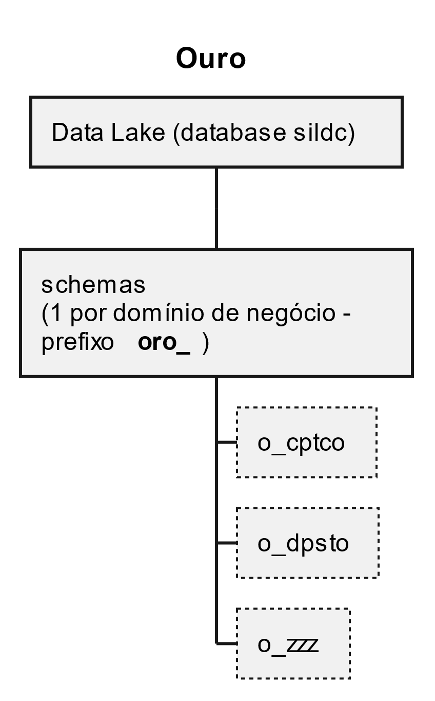
Nomenclatura de objetos de dados
Dados ouro tratam de novos dados ou novas interpretações de dados existentes. Desta forma, tratam-se de novos objetos.
De modo a manter padrão corporativo de nomenclatura, os nomes dessas novas tabelas devem respeitar o MN TE 074 [44] com a seguinte alteração.
-
O identificador owner não será mais o nome zzz do sistema SIZZZ;
-
O identificador owner será o;
-
Para o schema o_dominio, teríamos o owner o.
Por exemplo (nomes hipotéticos):
-
oTBnnn_cptco_t para schema o_cptco.
-
oTBnnn_dpsto_t para schema o_dpsto.
-
oTBnnn_dominio_t para schema o_dominio
| Schema | Template de tabela (exemplo) |
|---|---|
| o_cptco | oTBnnn_cptco_t |
| o_dpsto | oTBnnn_dpsto_t |
| o_dominio | oTBnnn_dominio_t |
Concessão de acesso
A concessão de acesso se dará por meio de solicitação de inclusão em grupo de acesso no Acesso Lógico (SIGAL) (MN TE 203, 2022) [40].
Devem ser atendidos o MN TE 159 (Matriz de Perfis de Acesso a Sistemas – MPAS) [41] e o MN TE 203 (Gerenciamento de Identidade e Acesso Lógico).
Considerando o domínio de dados ZZZ cujos dados ouro estarão disponíveis num database schema o_zzz, teremos:
-
Para cada database schema o_zzz, será criado um grupo de acesso conforme MN TE 203.
- O Gestor do Domínio de Dados na Comunidade do Domínio de Dados é responsável por criar, definir e manter a Matriz Auxiliar de Perfis (MAP) e a Matriz de Perfis de Acesso a Sistemas (MPAS) para esse(s) grupo(s) de acesso; conforme MN TE 159.
-
Será criado grupo LDC_O_ZZZ_PERFIL_001 (exemplo de nome) para autorização de acesso aos dados no schema o_zzz contendo os dados ouro;
-
Com a seguinte nomenclatura para os grupos:
-
Os nomes de grupos sempre serão representados em caracteres minúsculos.
-
Os nomes não devem conter acentos nem cê-cedilha.
-
LDC_SCHEMA_PERFIL_nnn
-
O prefixo LDC_ é obrigatório por tratar-se de grupo de acesso para o Data Lake (SILDC);
-
O SCHEMA deve ser substituído pelo nome do schema do domínio de dados;
-
O identificador _PERFIL_ é obrigatório será substituído por _PFL_;
-
O sufixo nnn deve ser substituído por número sequencial com 3 dígitos crescente para cada novo grupo de acesso ao schema.
- O sufixo 001 (número 1) é reservado para o grupo inicial que autoriza acesso read-only aos objetos do sistema.
-
-
Por exemplo (nomes hipotéticos):
-
grupo LDC_O_CPTCO_PFL_001 para o schema o_cptco
-
grupo LDC_O_DPSTO_PFL_002 para o schema o_dpsto
-
-
-
| Schema | Sequencial | Nome do grupo de acesso |
|---|---|---|
| o_cptco | 1 | LDC_O_CPTCO_PFL_001 |
| o_dpsto | 2 | LDC_O_DPSTO_PFL_002 |
| o_zzz | nnn | LDC_O_ZZZ_PFL_nnn |
-
Com a seguinte configuração do grupo:
-
A concessão de acesso deverá ser sob demanda, pois requer revisão do Gestor da Informação (MN TE 203, 2022);
-
O grupo será configurado para requerer dupla autorização;
-
Primeiro, qualquer solicitação deverá ser autorizada pelo Gestor do Acesso Lógico (MN TE 203, 2022) do solicitante;
-
Por fim, também deverá ser autorizada pelo Gestor de Informação.
-
-
-
O grupo autorizará acesso read-only (somente leitura) a todos os objetos contidos no schema o_zzz;
Finalmente, deverá ser solicitado à equipe de Governança do Data Lake, a implantação do grupo LDC_O_ZZZ_PERFIL_nnn na infraestrutura do Data Lake de modo que esteja ativo para uso do Acesso Lógico.
Processo
Iniciativas de preparação e carga de dados de categoria ouro no Data Lake adotam um processo simplificado:
-
Criação de um schema o_zzz (nome de exemplo) no Data Lake se não existir;
-
Definição pelo gestor de script SQL para processamento dos dados;
-
Carga dos dados processados no schema o_zzz no Data Lake.
Criação de schema o_zzz (zzz = nome do domínio)
O principal ator é a Governança do Data Lake que coordenará as atividades necessárias para criação das estruturas (schema) no qual os dados serão carregados.
Com uma sequência de atividades descritas a seguir:
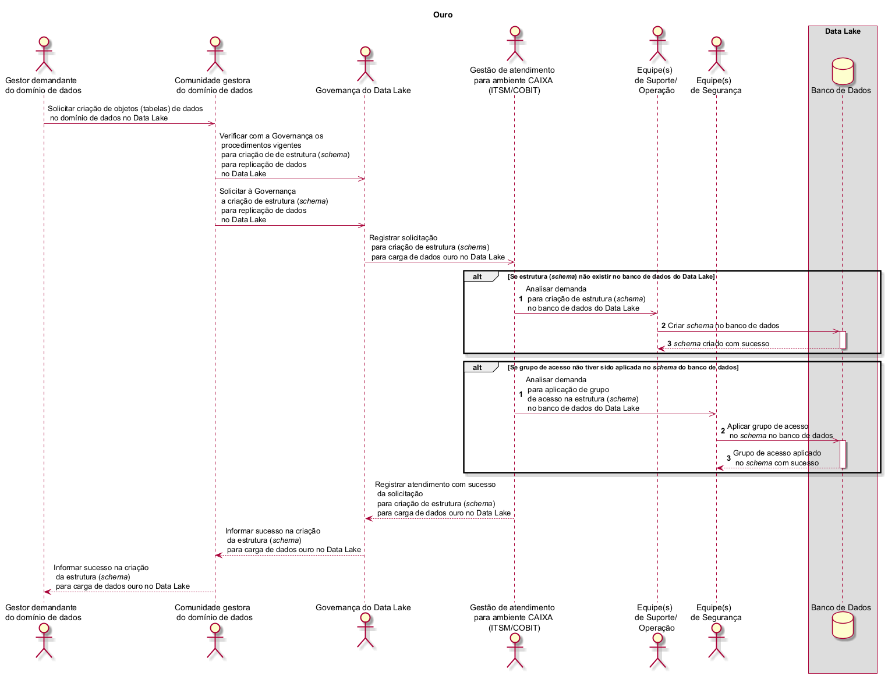
Figura 12 - Diagrama de sequência para criação da estrutura (schema) necessário para disponibilização de dados no Data Lake.
Preparação e carga de dados
O principal ator é o gestor do domínio de dados que analisa e que desenvolve o processo de construção dos dados de categoria ouro.
Com o seguinte processo para preparação e carga de dados num schema pré-existente.
Figura 13 - Diagrama de sequência para preparação e disponibilização de novos dados de categoria ouro no Data Lake.
Data Mesh
Além da categorização dos dados, é importante observar o conceito de Data Mesh2 [45], que consiste em uma nova abordagem de arquitetura de dados distribuída e descentralizada, organizando os dados em seus domínios de dados, usando uma abordagem derivada do design orientado por domínio e um modelo de propriedade de dados, disponibilizando-os para os demais domínios de dados como produtos da corporação. Os domínios de dados são agrupadores lógicos, de uma mesma área de negócio, por exemplo, contemplando os dados e as equipes gestoras e mantenedoras desses dados, que detém o conhecimento adequado sobre a diversidade das regras de negócio para tratar e manipular os dados, e a velocidade de resposta frente às mudanças nas regras de negócio. Trata-se de equipes especializadas, multifuncionais e independentes, capazes de produzir de forma mais eficiente os resultados esperados pela área de negócio.
A figura a seguir apresenta os princípios do Data Mesh.
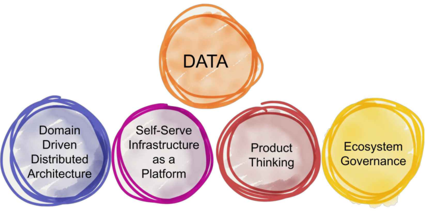
Figura 14 Princípios do Data Mesh
Com isto, não há a necessidade de armazenar e gerenciar os dados em repositórios específicos, que dificultam o acesso e limitam as possibilidades de análises sobre eles. Além disso, a responsabilidade de tratar e disponibilizar os dados, com qualidade e segurança, fica a cargo da equipe de cada domínio de dados, que é responsável por aplicar as visões de negócio e correlações adequadas sobre os dados, e deixá-los disponíveis para uso, criando uma plataforma de dados self-service.
A figura a seguir apresenta a abordagem de Data Mesh, onde os domínios de dados são representados pelos nós e cada nó é autossuficiente como provedor de dados e/ou consumidor de dados dos demais domínios de dados.
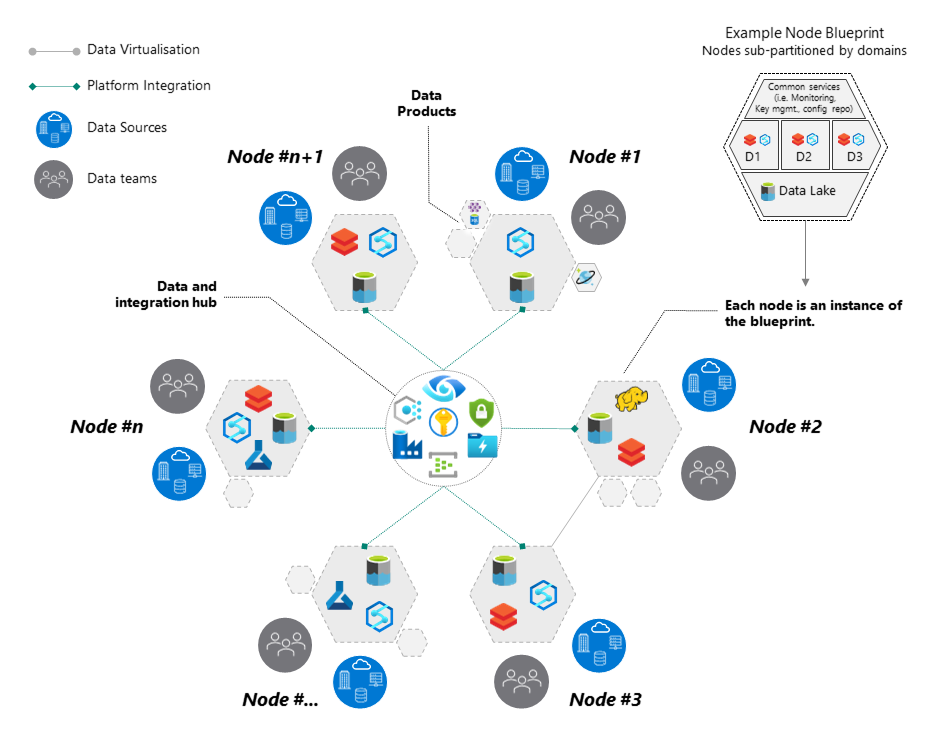
Figura 15 Representação abordagem Data Mesh (Strengholt, Piethein; Courtright, Andrea; 2022)
Essa abordagem permite eliminar os desafios de disponibilidade e acessibilidade de dados em escala e, que os usuários de negócios e cientistas de dados acessem, analisem e gerem insights de negócios, a partir desses dados, sem a intervenção de equipes de TI especializadas que, na maioria dos casos, estão distantes das áreas de negócio da corporação.
Como visto na figura acima, essa nova abordagem de arquitetura requer um novo modelo de governança de TI, para garantir a interoperabilidade dos domínios de dados e democratização dos dados necessárias, que não podem ser alcançadas sem a descentralização dos dados e a priorização da experiência dos consumidores dos dados.
A figura a seguir representa os principais agentes da arquitetura proposta pelo Data Mesh.
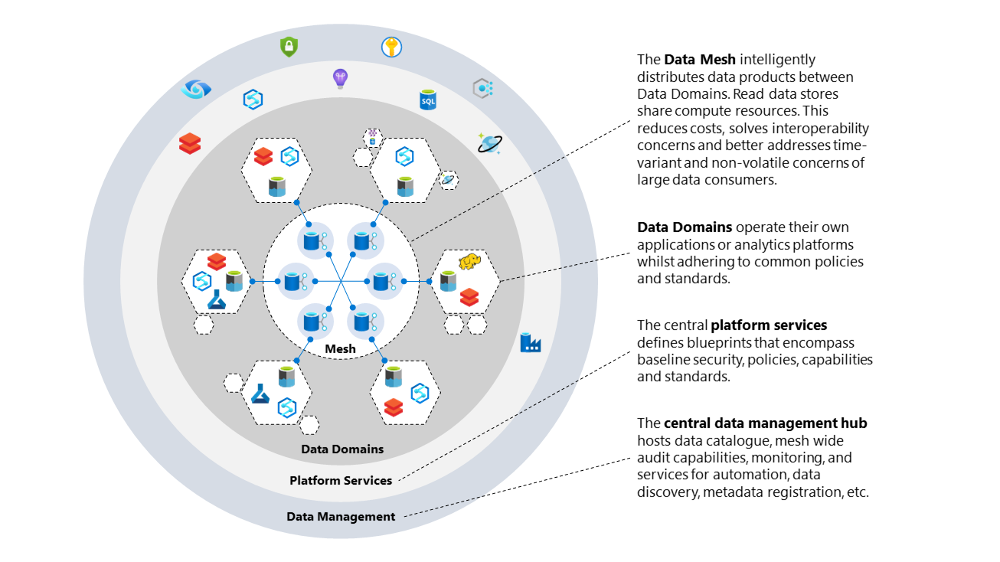
Figura 16 Arquitetura abordagem Data Mesh (Strengholt, Piethein; Courtright, Andrea; 2022) [46]
A implementação do Data Mesh impõem alguns desafios para as corporações, dentre eles, a reestruturação de suas plataformas de dados, a redefinição das funções dos proprietários dos dados nos domínios de dados e a revisão das estruturas para tornar a nova abordagem viável. Por este motivo, dentro da abordagem do Data Mesh são propostas algumas topologias com o intuito de fazer com que as corporações possam adaptar as suas estratégias de adoção do Data Mesh aos requisitos necessários para a implementação, tais como, definir os proprietários dos dados e domínios de dados, estrutura organizacional, estratégia de migração, tecnologias necessárias etc.
Em Data Mesh: Topologies and domain granularity [47], Piethein Strengholt propõe desde uma topologia de mesh 100% descentralizada e federada, chamada de fine-grained fully federated mesh, até uma topologia de mesh com domínios de dados distribuídos, mas sem granularidade por domínio de dados. Ainda existe agregações em que diversos domínios não conseguem ser identificados separadamente, chamada de coarse grained and governed mesh. Ou seja, uma topologia 100% centralizada tradicional até alcançar uma topologia completamente descentralizada.
A figura a seguir apresenta as topologias propostas por Piethein Strengholt.
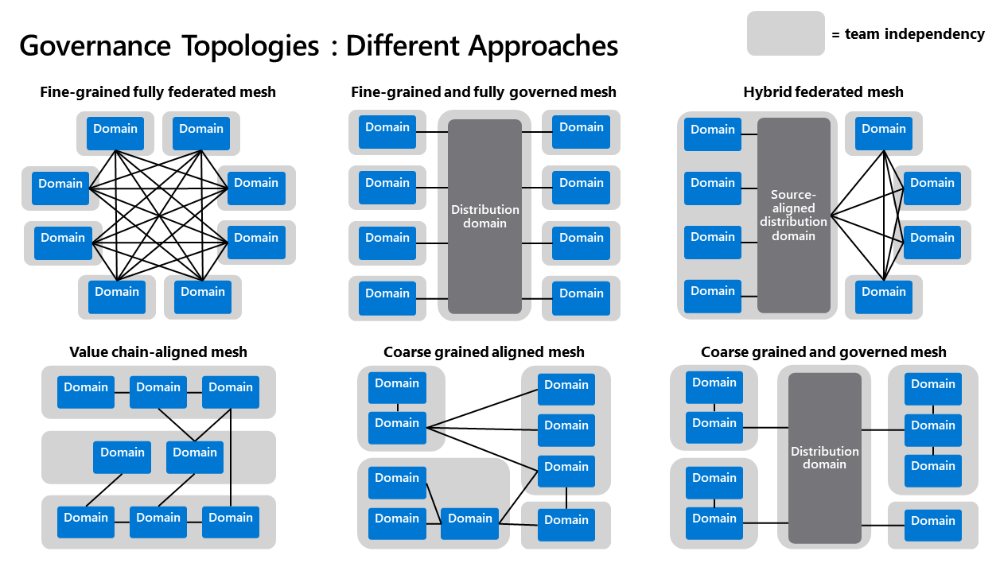
Figura 17 Topologias Data Mesh (Piethein Strengholt, 2022)
A seguir, as topologias propostas por Piethein Strengholt são apresentadas:
-
Na topologia chamada Fine-grained fully federated mesh, os dados são organizados em domínios de dados (equipes independentes) a partir do nível de granularidade das fontes de dados, e são totalmente compartilhados entre os demais domínios de dados, sendo também a gestão dos dados distribuídos entre os domínios de dados;
-
Na topologia chamada Fine-grained and fully governed mesh, os dados são organizados em domínios de dados (equipes independentes) a partir do nível de granularidade das fontes de dados, e são compartilhados e geridos por um processo de governança centralizado;
-
Na topologia chamada Hybrid federated mesh, os dados são organizados em domínios de dados (equipes independentes), e são compartilhados e geridos utilizando as duas abordagens anteriores, parte de forma federada e parte de forma centralizada;
-
Na topologia chamada Value chain-aligned mesh, os dados são organizados em conjuntos de domínios de dados, definidos a partir das similaridades negociais entre esses domínios de dados e o valor que, juntos, podem representar. Os dados são geridos e compartilhados pelos próprios domínios de dados;
-
Na topologia chamada Coarse grained aligned mesh, os dados podem ser organizados ou não em conjuntos de domínios de dados, definidos a partir das similaridades negociais entre esses domínios de dados e o valor que, juntos, podem representar. Os dados são geridos e compartilhados pelos próprios domínios de dados;
-
Na topologia chamada Coarse grained and governed mesh, os dados podem ser organizados ou não em conjuntos de domínios de dados, definidos a partir das similaridades negociais entre esses domínios de dados e o valor que, juntos, podem representar. Os dados são geridos e compartilhados por um processo de governança centralizado.
Proposta Mesh
Considerando as características do projeto de Big Data da CAIXA, o conceito de Comunidades CAIXA e a maturidade das suas áreas de negócio no uso dos ambientes de dados, a topologia proposta para a organização dos dados no Data Lake é a fine grained governed mesh que seria a evolução natural da atual organização coarse grained governed mesh em que algumas comunidades fazem gestão de mais de um domínio de dados com equipes compartilhadas.
Fine grained governed mesh permite o agrupamento dos dados em domínios de dados com gestão fina, fazendo uso das equipes de gestão e manutenção dos dados, que já existem nas comunidades, e do conhecimento que as áreas negociais detêm sobre os dados.
Além disso, essa abordagem se aproveita da existência dos papéis dos proprietários ou gestores dos dados, definidos em cada comunidade, e necessário para a criação do domínio de dados.
Essa abordagem também facilita o processo de ingestão dos dados no Data Lake, especialmente na camada de dados bronze, pois não requer conhecimento específico do negócio da equipe de TI, responsável pela ingestão dos dados no Data Lake, já que os dados são obtidos e armazenados da forma em que se encontram nas fontes de dados originárias, sem qualquer tratamento que altere esses dados.
Após o processo de ingestão dos dados no Data Lake, eles passam a ser tratados dentro de cada domínio de dados, pela equipe multifuncional do domino, responsável pela manipulação e disponibilização dos dados. Para garantir a qualidade dos dados e do processo, deve existir um processo de governança centralizado, que define padrões de obtenção, tratamento, manipulação e acesso aos dados, obtém e gerencia os metadados técnicos e negociais, além da garantia de aplicação de processos de qualidade sobre os dados em cada camada de categorização.
A figura a seguir apresenta a proposta de adoção do Data Mesh para o projeto de Big Data da CAIXA, considerando os domínios de dados e a categorização dos dados no Data Lake.
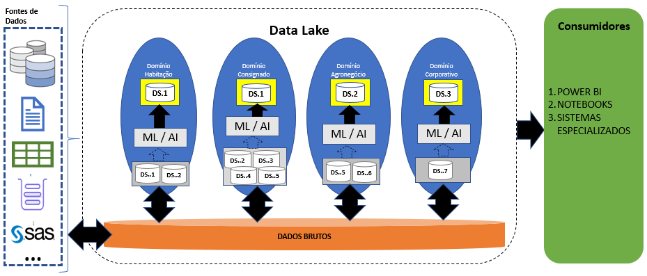
Figura 18 Proposta Domínio de Dados
Observe que, diferentemente do conceito inicial do Data Mesh, a camada de dados bronze não se encontra representada dentro de cada domínio de dados, mas em uma camada de dados separada. A ideia é evitar a replicação dos dados brutos das respectivas fontes de dados dentro dos domínios de dados e permitir o reuso desses dados. Além disso, a equipe de TI responsável pela ingestão dos dados na camada de dados bronze não se torna um gargalo, já que o processamento dos dados passa a ser feito pelas equipes dos domínios de dados, o que acaba desafogando a equipe de TI e possibilitando maior capacidade de entrega.
Dentro de cada domínio, os dados brutos são transformados, a partir das visões de negócio desejadas, e então são enriquecidos com processos de inteligência, gerando informações de valor para o negócio. Todos os dados do Data Lake, das categorias bronze, prata e ouro, são disponibilizados pelos gestores dos dados de cada domínio de dados para acesso pelos demais domínios de dados.
A título de exemplificação, são apresentados, na figura 18, alguns domínios de dados com base nas áreas de negócio da CAIXA, tais como os dados sob responsabilidade das Comunidades de Habitação, Clientes, Programas Sociais e Pessoas. Cada domínio de dados é composto da(s) fonte(s) de dado(s) relacionadas ao negócio base do domínio, das pessoas (equipe especializada) e do conhecimento sobre os dados.
Para permitir a implementação dessa proposta é preciso definir as entidades envolvidas e os processos a serem mapeados. A figura a seguir apresenta uma proposta de arquitetura macro do projeto de Big Data x Data Lake da CAIXA, considerando os domínios e a categorização dos dados dentro dos domínios.
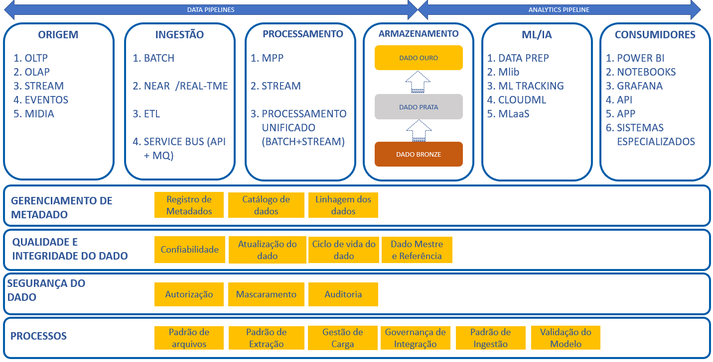
Figura 19 Entidades Big Data x Data Lake x Governança
Na parte de cima da figura, pode-se observar as entidades envolvidas na proposta de arquitetura, que representam desde as origens dos dados para o Data Lake até os consumidores finais:
-
Origem
- Esta entidade representa os tipos de origens de dados que são utilizadas para a atualização dos dados no Data Lake, que podem ser sistemas OLTP, sistemas OLAP, eventos, arquivos de mídias, logs, dentre outros;
-
Ingestão
- Esta entidade representa os tipos de processos de ingestão de dados que podem ser utilizados para atualizados os dados no Data Lake, que podem ser processos de ETL (Extração-Transformação-Carga), processos em tempo real, processos batch, dentre outros;
-
Processamento
- Esta entidade representa os tipos de processamentos que podem sobre os dados após ocorrer a ingestão deles no Data Lake;
-
Armazenamento
- Esta entidade representa o conjunto dos domínios de dados e as respectivas categorizações criadas em cada domínio;
-
ML/IA
- Esta entidade representa os tipos de modelos, métodos e algoritmos de inteligência artificial e aprendizado de máquina que podem ser aplicados sobre os dados;
-
Consumidores
- Esta entidade representa os tipos de consumidores finais e respectivos objetivos de análise.
Outro fator importante da arquitetura proposta, e apresentada na parte inferior da figura acima, é a existência de uma governança de dados centralizada, apoiada na padronização para garantir interoperabilidade, segurança, conformidade, aplicação de políticas de controle a nível de domínios de dados e focada em uma infraestrutura de dados de autoatendimento compartilhada. As camadas integrantes da governança centralizada abrangem todo o processo que ocorre sobre os dados, desde sua obtenção, passando pelas transformações necessárias, até a geração das informações ou insights e seu consumo pelos usuários finais, ou seja, a governança é responsável pela definição das regras e padrões globais a serem aplicados sobre os dados e processos e por controlar a qualidade, a segurança e a conformidade de ponta a ponta, promovendo a entrega de seus produtos de dados e facilitando o acesso a eles.
Para promover esses benefícios, a governança proposta é composta das seguintes camadas:
-
Gerenciamento de metadados (regido pelo MN TE 174 [48])
- Esta camada da governança é responsável por garantir o conhecimento sobre os dados a partir dos metadados a eles associados, dentro e fora dos domínios de dados, além de permitir implementar a linhagem dos dados, desde sua obtenção até sua entrega ao usuário final. Os metadados aqui necessários são os metadados técnicos e negociais e são exigidos para cada categoria dos dados, dentro de cada domínios de dados.
-
Qualidade e integridade dos dados
- Esta camada da governança é responsável por garantir a qualidade do dado, atestado a confiabilidade do dado, definindo o ciclo de vida de cada dado e quais dados podem ser considerados para a definição de uma arquitetura de dado mestre e de referência.
-
Segurança dos dados
- Esta camada da governança é responsável por garantir a segurança dos dados e das informações geradas, ao garantir a implementação do processo de autorização de acesso aos dados dentro de cada domínio de dados, os perfis responsáveis, além de definir o processo de mascaramento dos dados, obedecendo os critérios de proteção dos dados e de permitir a verificação da utilização dos dados por meio de logs de acesso para auditoria.
-
Processos
- Esta camada da governança é responsável por definir os padrões a serem utilizados no processo de extração e carga dos dados, as ferramentas de orquestração dos processos de atualizações dos dados, as regras para o compartilhamento dos dados entre os domínios de dados e os usuários finais, padrões de criação dos objetos para cada categoria de dados dentro dos domínios de dados e regras de validação dos modelos de dados gerados.
Dito isto, pode-se observar que a arquitetura proposta compreende as entidades e o processo de governança necessários para a implementação de uma adequação do conceito de Data Mesh, com foco na construção de esteiras de produção de dados, especializados em domínios de dados, e no compartilhamento dos dados a partir de soluções do tipo self service.
Critérios
A arquitetura proposta se aplica a todos os dados disponíveis no ambiente CAIXA: sistêmicos, derivados, de origem externa, de Shadow IT etc.
Todas as informações devem ser organizadas em domínios de dados e categorizadas conforme essa arquitetura de referência.
Tecnologia
Valer-se de tecnologias para processamento e análise de dados Big Data que são definidos por 7 Vs (vês): velocidade, veracidade, volume, valor, visualização, variabilidade e variedade.
Possibilitar análise, modelagem estatística, aplicação de tecnologias/técnicas de machine learning e inteligência artificial.
Ambiente Atual
Figura 20 - Arquitetura Hadoop CAIXA- wikiPRD (corerj.caixa)
Dell EMC Isilon
O Dell EMC Isilon é uma plataforma de armazenamento NAS scale-out , com integração nativa ao protocolo HDFS, permitindo aos usuários do Hadoop acesso integrado para proteção dos dados da corporação, eficiência de armazenamento e movimentação de dados acelerada em uma grande variedade de protocolos padrão do setor (NFS, CIFS, FTP, HTTP).
A integração do HDFS ao Isilon também permite aos clientes usar qualquer distribuição Hadoop (inclusive baseadas na distribuição Apache Bigtop [49]) que preferirem, além de expandir e aumentar a adoção do Hadoop em implementações em toda a corporação.
No ambiente Big Data CAIXA, todo storage HDFS do ambiente se baseia em Dell EMC Isilon. O storage HDFS é utilizado para todo processamento distribuído no ambiente Hadoop, sejam processos Map Reduce, Apache Pig, Apache Spark ou Pivotal HDB HAWQ.
Todos os dados do ambiente Big Data e do Data Lake estão armazenados no HDFS.
Hadoop
O Hadoop é uma estrutura de código e protocolo abertos, composta de vários componentes, uma biblioteca de software versátil e acessível, utilizados para o armazenamento e processamento de grandes volumes de dados.
Apresenta estrutura escalável que admite utilização de hardware commodity de baixo custo e heterogêneo: “construa seu cluster com qualquer máquina a disposição no mercado, mesmo que todas diferentes e baratas”.
Deste modo, apresenta baixo custo inicial e pode ser escalado conforme a necessidade.
No ambiente Big Data CAIXA, o Hadoop provê ferramentas de:
-
Ingestão de streaming de dados (Apache Flume);
-
Processamento distribuídos de arquivos de carga batch (Apache Pig);
-
Gestão de carga/processamento distribuído (Apache Yarn);
-
Serviço de localização de serviços/servidores distribuídos (Apache Zookeeper);
-
Gestão de todas as ferramentas do ambiente (Apache Ambari);
-
Storage distribuído, tolerante a falhas e de alto desempenho (HDFS);
-
Banco de dados do Data Lake CAIXA (Pivotal HDB HAWQ).
Pivotal HDB HAWQ
O Pivotal HDB HAWQ é uma interface para Hadoop, que permite a realização de rápidas operações SQL sobre um grande volume de dados. A principal característica é a utilização de Massive Parallel Processing (MPP), no qual os dados são particionados em múltiplos servidores (segment servers) e cada um gerencia uma parte distinta do conjunto total de dados.
Apresenta sintaxe de comandos SQL semelhantes ao PostgreSQL versão 8.5, pois utiliza o processador de comandos dessa versão do PostgreSQL. Entretanto, HAWQ não é um banco de dados relacional nem é compatível com a especificação de padrão SQL. É um banco de dados pseudo relacional, com estrutura tabular, sem funcionalidade para operações DELETE, sem funcionalidade para operações UPDATE, sem funcionalidade de índices (table scan) e sem funcionalidade para integridade referencial.
Documentação dos comandos e dos comportamentos esperados está disponível nos manuais do produto em [12] [13] (PIVOTAL SOFTWARE, INC. Pivotal HDB 2.3.0 Documentation, 2018).
Os dados disponíveis no banco de dados Pivotal HDB HAWQ do ambiente Big Data formam o Data Lake CAIXA.
Ambiente Futuro
Nuvem
Prover estruturas para organização e para armazenamento de dados Big Data em estruturas de Data Lake. Além de ferramental para as atividades de análise de dados.
Segue uma breve compilação com ferramentas de diversos provedores de serviços em nuvem para atendimento dessas necessidades.
Figura 21 - Exemplos de ferramentas de diversos provedores de serviços em nuvem.
Case
SIGPD - Sistema Gestor de Proteção de Dados
O objetivo do sistema é atender à Lei Geral de Proteção de Dados Pessoais (LGPD ou LGPDP) [50] e ao MN CR 439 (Atendimento aos Direitos do Titular - Lei Geral de Proteção a Dados Pessoais (LGPD)) [51].
Conforme solicitado na Avaliação/Revisão de Arquitetura 16096644 [52]: Regulatório LGPD - Relatório Técnico SIGPD – SIAPD:
“A Lei Geral de Proteção de Dados Pessoais (LGPD ou LGPDP) disciplina os tratamentos de dados classificados como pessoais (isto é, relacionados a uma pessoa natural identificada ou identificável, inclusive menores de idade). Nesse escopo, existem dados considerados sensíveis, isto é, dados sobre origem racial ou étnica, convicção religiosa, opinião política, filiação a sindicato ou a organização de caráter religioso, filosófico ou político, dado referente à saúde ou à vida sexual, dado genético ou biométrico.
“A LGPD define tratamento como qualquer operação realizada sobre dados pessoais (como acesso, recepção, processamento, armazenamento, expurgo, distribuição e etc.). Nesse contexto, a Lei obriga, dentre outros aspectos, a definição de que qualquer tratamento deve ter uma finalidade específica, e ser enquadrado em pelo menos uma das nove hipóteses legais, previstas na versão atual da Lei.
“Dentre as hipóteses legais consta o consentimento, isto é, a anuência clara e incontestável da pessoa (o que requer a interação com usuário) para que tratamentos de seus dados pessoais, para aquela finalidade específica, possam ser realizados.
“Por exemplo, para a finalidade ‘inclusão de cadastro’ no processo de digital onboarding, os tratamentos com essa finalidade provavelmente se enquadrarão na hipótese legal ‘consentimento’.
“Na jornada dos dados de uma pessoa (nesse caso, denominada pela Lei de titular) na Caixa Econômica Federal, todos os grupos de tratamentos (sobre dados pessoais) com a mesma finalidade devem ser registrados, com controle de chancela de origem da solicitação/autorização, para fins de auditoria e apresentação de extrato de dados detalhado, que deve informar ao titular quais tratamentos foram aplicados aos seus dados.
“Na ausência de detalhamento na LGPD e inexistência da Autoridade Nacional de Proteção de Dados (ANPD), órgão regulador do tema e que ainda não encontra-se em funcionamento, os controles, neste momento, serão bastante abrangentes, com alto grau de granularidade.
“A ANPD poderá realizar operações de bloqueio por tempo determinado (temporário) sobre dados de determinados titulares, como uma das sanções previstas na Lei em caso de descumprimento. Na ausência de definição mais detalhada, devemos assumir que o bloqueio pode envolver: bloqueio de acesso a dado de um titular ou aos dados de grupos de titulares e, até mesmo o bloqueio de tratamentos realizados com uma finalidade específica, ou ainda, os tratamentos enquadrados em uma hipótese legal específica.
“Desta forma, os sistemas transacionais deverão analisar todas as situações necessárias, isto é, situações em que dados pessoais sejam tratados, que, por requisitos da LGPD, devem ser enquadrados em hipóteses legais. Nestas situações, deverão verificar autorização (incluindo existência de bloqueios) para tratamentos de quaisquer dados pessoais.
“O gestor do sistema será a DECOR, visto que o GT PRESI LGPD não possui CPNJ e tem caráter temporário.
“Acessos:
-
A pessoa (titular, procurador, responsável legal, etc.) deve ter acesso a extrato de dados e possibilidade de alterar consentimentos relacionado aos seus dados.
-
O encarregado (Data Protection Officer) [53] deve ser capaz de acompanhar todos os extratos de dados e de realizar auditoria de autorizações.
-
Sistemas (business-to-business) devem ser capazes de verificar autorização para utilização dos dados.
“Demanda regulatória externa. A LGPD entra em vigor em agosto de 2020.
“Solicitamos emitir parecer com relação ao relatório técnico (anexo 1990466) complementado com as especificações suplementares para SIAPD (anexo 1992483) e SIGPD (anexo 1992481) “
Para esse fim, o Data Protection Officer (DPO) requer capacidade de verificação e de identificação de possíveis inconsistências entre fontes de dados pessoais na CAIXA.
Especialmente, no atendimento ao direito de correção pelo titular de dados pessoais em que qualquer correção deve ser refletida globalmente na CAIXA (aplicativos móveis, sítios web, boletos, faturas etc.) sem apresentação de divergência quanto aos dados corrigidos sob pena de sanções pela ANPD.
Isso representa um desafio, pois existem diversas fontes de dados pessoais na CAIXA (enumeração não exaustiva): cadastros de clientes, cadastro de empregados, cadastro do saúde caixa, cadastros de programas sociais, etc.
A representação de pessoa é consistente entre os diversos sistemas CAIXA. Entretanto, a forma de organização das informações/dados relacionadas pode ser particular em cada sistema. A perspectiva negocial e a necessidade sistêmica informam como os dados podem estar organizados em cada sistema.
Esse é um dos valores dos dados prata/ouro, trazer uma visão negocial organizada das informações distribuídas internamente nos sistemas (bronze) e enriquecida com o conhecimento dos especialistas de domínio. Não obstante, dados bronze são indispensáveis aos trabalhos de análise.
As siglas a seguir representam dados de categoria bronze contendo dados pessoais.
| Sigla | Domínio de Dados | Nome |
|---|---|---|
| SICLI | Clientes | Sistema cliente CAIXA |
| SIACI | Habitação | Sistema de administração de carteiras imobiliárias – externo |
| SIASC | Pessoas | Auto-atendimento Saúde Caixa corporativo |
| SISRH | Pessoas | Sistema de recursos humanos |
| SIDUN | Programas Sociais | Sistema de Cadastro Único para programas sociais do Governo Federal |
| SIISO | Programas Sociais | Cadastro NIS |
Tabela 4 - Fontes (não exaustivas) de dados pessoais
Seguem exemplos de propostas de criação de dados de categorias prata/ouro nos domínios de dados para identificação de inconsistências nos dados pessoais nos cadastros do domínio de Clientes e nos cadastros do domínio de Fundos de Governo.
Por exemplo, preparação de dados ouro no domínio Clientes para identificar inconsistências nos dados pessoais do cadastro comercial quando analisados contra o cadastro de empregados (oTB001), pois todo empregado também é cliente CAIXA.
- Ouro, pois representam indicadores consolidados corporativos para o tema no domínio Clientes.
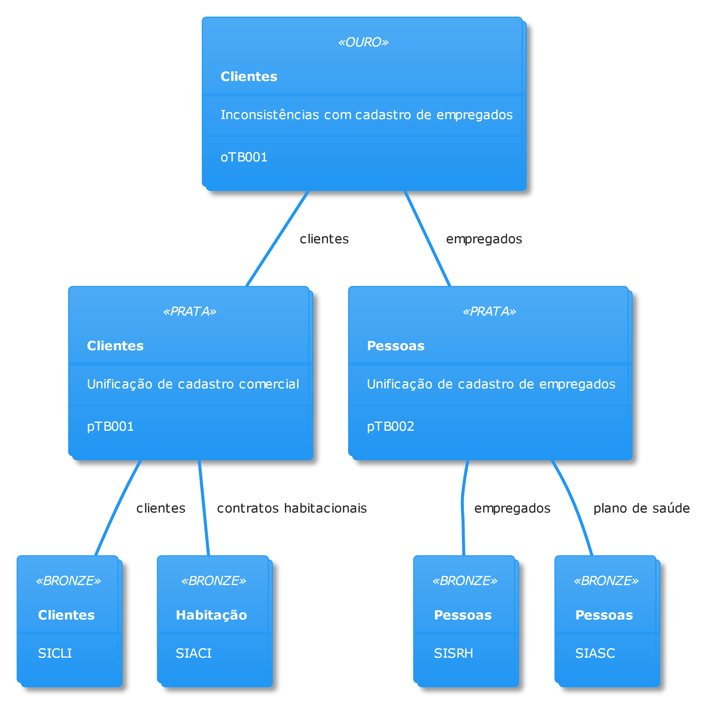
Figura 22 - Representação do exemplo da preparação de dados ouro oTB001.
Conforme o seguinte algoritmo para análise e preparação destes dados ouro no domínio Clientes para identificar inconsistências nos dados pessoais do cadastro comercial quando analisados contra o cadastro de empregados (oTB001):
-
Dados prata do domínio de Clientes com unificação e depuração de cadastro comercial (pTB001) produzidos a partir de análise de dados:
-
Bronze do SICLI (Sistema cliente CAIXA) do domínio Clientes;
-
Bronze do SIACI (Sistema de administração de carteiras imobiliárias – externo) do domínio Habitação.
-
-
Dados prata do domínio de Pessoas com unificação e depuração de cadastro de empregados (pTB002) produzidos a partir de análise de dados:
-
Bronze do SISRH (Sistema de recursos humanos) do domínio Pessoas;
-
Bronze do SIASC (Auto-atendimento Saúde Caixa corporativo) do domínio Pessoas.
-
-
Dados ouro do domínio Clientes com refinamento adicional dos cadastros para identificar inconsistências nos dados pessoais do cadastro comercial quando analisados contra o cadastro de empregados (oTB001), pois todo empregado também é cliente CAIXA. Produzidos a partir de análise dos dados prata acima:
-
Prata do domínio de Clientes com unificação e depuração de cadastro comercial (pTB001);
-
Prata do domínio de Pessoas com unificação e depuração de cadastro de empregados (pTB002).
-
Em outro exemplo, preparação de dados prata no domínio Fundos de Governo para identificar inconsistências nos dados pessoais no cadastro do FGTS (SIFUG) quando analisados contra o cadastro dos programas sociais (pTB004).
-
Prata, pois não representam visões definitivas consolidadas;
-
Representam dados para análise contínua;
-
Dados preparados/organizados sob a perspectiva do domínio de dados Fundos de Governo para uso em outras finalidades e outros domínios.
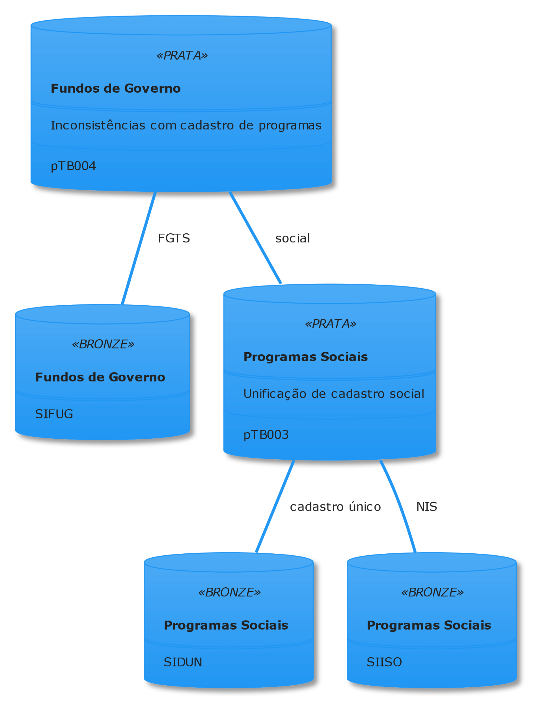
Figura 23 - Representação do exemplo da preparação de dados prata pTB004.
Conforme o seguinte algoritmo para análise e preparação de dados prata no domínio Fundos de Governo para identificar inconsistências nos dados pessoais do cadastro do SIFUG (FGTS) quando analisados contra o cadastro dos programas sociais (pTB004):
-
Dados prata do domínio de Programas Sociais com unificação e depuração de cadastro de programas sociais (pTB003) produzidos a partir de análise de dados:
-
Bronze do SIDUN (Sistema de Cadastro Único para Programas Sociais do Governo Federal) do domínio Programas Sociais;
-
Bronze do SIISO (Cadastro NIS) do domínio Programas Sociais.
-
-
Dados prata do domínio Fundos de Governo com refinamento adicional dos cadastros para identificar inconsistências nos dados pessoais do cadastro do SIFUG (FGTS) quando analisados contra o cadastro dos programas sociais (pTB004). Produzidos a partir de análise de dados:
-
Bronze do SIFUG (Novo Sistema do FGTS) do domínio Fundos de Governo;
-
Prata do domínio de Programas Sociais com unificação e depuração de cadastro de programas sociais (pTB003).
-
Anexos
Referências
| [1] | WIKIMEDIA FOUNDATION, INC. ET AL. Data lake. Wikipedia, 21 abr. 2022. Disponível em: <https://web.archive.org/web/20221024025313/https://en.wikipedia.org/wiki/Data_lake>. Acesso em: 24 out. 2022. |
|---|---|
| [2] | DIXON, J. Pentaho, Hadoop, and Data Lakes. James Dixon’s Blog, 14 out. 2010. Disponível em: <https://web.archive.org/web/20221023221645/https://jamesdixon.wordpress.com/2010/10/14/pentaho-hadoop-and-data-lakes/>. Acesso em: 23 out. 2022. |
| [3] | WIKIMEDIA FOUNDATION, INC. ET AL. Data warehouse. Wikipedia, 08 set. 2022. Disponível em: <http://web.archive.org/web/20221108235541/https://en.wikipedia.org/wiki/Data_warehouse>. Acesso em: 08 nov. 2022. |
| [4] | MARR, B. What Is A Data Lakehouse? A Super-Simple Explanation For Anyone. Bernard Marr _ Forbes, 18 jan. 2022. Disponível em: <https://web.archive.org/web/20220708090249/https://www.forbes.com/sites/bernardmarr/2022/01/18/what-is-a-data-lakehouse-a-super-simple-explanation-for-anyone/?sh=68ac81de6088>. Acesso em: 18 jan. 2022. |
| [5] | PUNNEN, A. From Data Warehouse to Data Lake to Data Lakehouse | by Alex Punnen. Medium – Where good ideas find you, 04 jul. 2022. Disponível em: <https://web.archive.org/web/20221202132627/https://medium.com/better-software/from-data-warehouse-to-data-lake-to-data-lakehouse-44ca03e0d624>. Acesso em: 02 dez. 2022. |
| [6] | LORICA, B. et al. What Is a Lakehouse? The Databricks Blog, 29 nov. 2022. Disponível em: <https://web.archive.org/web/20221129192558/https://www.databricks.com/blog/2020/01/30/what-is-a-data-lakehouse.html>. Acesso em: 30 jan. 2020. |
| [7] | HORTONWORKS, INC. Component Versions - Hortonworks Data Platform 2.6.3. Hortonworks.com, 2019. Disponível em: <https://web.archive.org/web/20181214003255/https://docs.hortonworks.com/HDPDocuments/HDP2/HDP-2.6.3/bk_release-notes/content/comp_versions.html>. Acesso em: 13 set. 2019. |
| [8] | DELL INC. Dell EMC Isilon – the #1 scale-out NAS storage platform, 13 Setembro 2019. Disponível em: <https://www.dellemc.com/bs-ba/storage/isilon/index.htm ou https://web.archive.org/web/20190913165531/https://www.dellemc.com/bs-ba/storage/isilon/index.htm>. Acesso em: 13 Setembro 2019. |
| [9] | DELL INC. EMC Isilon OneFS with Hadoop and Hortonworks Installation Guide. Data Storage, Cloud, Converged and Data Protection, 05 Outubro 2017. Disponível em: <https://web.archive.org/web/20191229191101/https://www.dellemc.com/en-us/collaterals/unauth/technical-guides-support-information/products/storage-5/docu71396.pdf>. Acesso em: 29 Dezembro 2019. |
| [10] | WIKIMEDIA FOUNDATION, INC. ET AL. Dell EMC Isilon. Wikipedia, 23 Dezembro 2019. Disponível em: <http://web.archive.org/web/20220330032200/https://en.wikipedia.org/wiki/Dell_EMC_Isilon>. Acesso em: 23 dez. 2021. |
| [11] | WIKIMEDIA FOUNDATION, INC. ET AL. Apache Hadoop. Wikipedia, 18 Dezembro 2022. Disponível em: <http://web.archive.org/web/20220429140916/https://en.wikipedia.org/wiki/Apache_Hadoop#Hadoop_distributed_file_system>. Acesso em: 29 abr. 2022. |
| [12] | PIVOTAL SOFTWARE, INC. Pivotal HDB 2.3.0 Documentation | Pivotal HDB Docs. Pivotal Documentation, 25 jul. 2018. Disponível em: <http://web.archive.org/web/20200718215702/http://hdb.docs.pivotal.io/230/hdb/index.html>. Acesso em: 28 jun. 2020. |
| [13] | PIVOTAL SOFTWARE, INC. Pivotal HDB 2.3.0 Documentation | PDF | Pivotal HDB Docs. Pivotal Documentation, 25 jul. 2018. Disponível em: <http://web.archive.org/web/20191230030356/https://hdb.docs.pivotal.io/230/pdf/pivotal-hdb-230-docs.pdf>. Acesso em: 30 dez. 2019. |
| [14] | WIKIMEDIA FOUNDATION, INC. ET AL. Massively parallel. Wikipedia, 19 mar. 2022. Disponível em: <http://web.archive.org/web/20220506053545/https://en.wikipedia.org/wiki/Massively_parallel>. Acesso em: 06 maio 2022. |
| [15] | WIKIMEDIA FOUNDATION, INC. ET AL. Flat-file database. Wikipedia, 06 dez. 2019. Disponível em: <https://web.archive.org/web/20191217123542/https://en.wikipedia.org/wiki/Flat-file_database>. Acesso em: 17 dez. 2019. |
| [16] | WIKIMEDIA FOUNDATION, INC. ET AL. Character encoding. Wikipedia, 26 jun. 2022. Disponível em: <http://web.archive.org/web/20220814033358/https://en.wikipedia.org/wiki/Character_encoding>. Acesso em: 14 ago. 2022. |
| [17] | APACHE SOFTWARE FOUNDATION ET AL, THE. Welcome to Apache Pig, 18 Junho 2018. Disponível em: <https://web.archive.org/web/20190828205445/http://pig.apache.org/>. Acesso em: 28 Agosto 2019. |
| [18] | WIKIMEDIA FOUNDATION, INC. ET AL. Scalability - Horizontal and vertical scaling. Wikipedia, 07 maio 2022. Disponível em: <http://web.archive.org/web/20220514132248/https://en.wikipedia.org/wiki/Scalability#Horizontal_(scale_out)_and_vertical_scaling_(scale_up)>. Acesso em: 14 maio 2022. |
| [19] | WIKIMEDIA FOUNDATION, INC. ET AL. Python (programming language). Wikipedia, 29 out. 2022. Disponível em: <https://web.archive.org/web/20221029210646/https://en.wikipedia.org/wiki/Python_%28programming_language%29>. Acesso em: 29 out. 2022. |
| [20] | INFORMATICA, INC. PowerCenter | 10.5. Informatica | Documentation, ago. 2022. Disponível em: <http://web.archive.org/web/20220812235628/https://docs.informatica.com/data-integration/powercenter/10-5.html>. Acesso em: 12 ago. 2022. |
| [21] | WIKIMEDIA FOUNDATION, INC. ET AL. Extract, load, transform. Wikipedia, 16 dez. 2021. Disponível em: <https://web.archive.org/web/20221024052357/https://en.wikipedia.org/wiki/Extract,_load,_transform>. Acesso em: 24 out. 2022. |
| [22] | WIKIMEDIA FOUNDATION, INC. ET AL. Extract, transform, load. Wikipedia, 07 jul. 2022. Disponível em: <http://web.archive.org/web/20220809034511/https://en.wikipedia.org/wiki/Extract,_transform,_load>. Acesso em: 09 ago. 2022. |
| [23] | IBM CORPORATION. What is ETL (Extract, Transform, Load)? IBM Cloud Learn Hub, 28 abr. 2020. Disponível em: <http://web.archive.org/web/20220802154217/http://www.ibm.com/cloud/learn/etl>. Acesso em: 02 ago. 2022. |
| [24] | TALEND. What is ETL (Extract, Transform, Load)? Definition, Process, and Tools. Talend Knowledge center, 2022. Disponível em: <http://web.archive.org/web/20220701174425/https://www.talend.com/resources/what-is-etl/>. Acesso em: 01 jul. 2022. |
| [25] | WIKIMEDIA FOUNDATION, INC. ET AL. Database (Data base management system). Wikipedia, 20 maio 2022. Disponível em: <http://web.archive.org/web/20220520072042/https://en.wikipedia.org/wiki/Database>. Acesso em: 19 maio 2022. |
| [26] | WIKIMEDIA FOUNDATION, INC. ET AL. Microsoft SQL Server. Wikipedia, 28 jul. 2022. Disponível em: <http://web.archive.org/web/20220808212622/https://en.wikipedia.org/wiki/Microsoft_SQL_Server>. Acesso em: 08 ago. 2022. |
| [27] | WIKIMEDIA FOUNDATION, INC. ET AL. Oracle Database. Wikipedia, 21 abr. 2022. Disponível em: <http://web.archive.org/web/20220703203906/https://en.wikipedia.org/wiki/Oracle_Database>. Acesso em: 03 jul. 2022. |
| [28] | WIKIMEDIA FOUNDATION, INC. ET AL. Oracle Exadata. Wikipedia, 28 set. 2021. Disponível em: <http://web.archive.org/web/20220703205508/https://en.wikipedia.org/wiki/Oracle_Exadata>. Acesso em: 03 jul. 2022. |
| [29] | WIKIMEDIA FOUNDATION, INC. ET AL. IBM Db2. Wikipedia, 14 jul. 2022. Disponível em: <http://web.archive.org/web/20220808212532/https://en.wikipedia.org/wiki/IBM_DB2>. Acesso em: 08 ago. 2022. |
| [30] | WIKIMEDIA FOUNDATION, INC. ET AL. Virtual Storage Access Method (VSAM). Wikipedia, 24 mar. 2022. Disponível em: <http://web.archive.org/web/20220613132940/https://en.wikipedia.org/wiki/Virtual_Storage_Access_Method>. Acesso em: 13 jun. 2022. |
| [31] | WIKIMEDIA FOUNDATION, INC. ET AL. JSON (JavaScript Object Notation). Wikipedia, 17 nov. 2022. Disponível em: <http://web.archive.org/web/20221129150837/https://en.wikipedia.org/wiki/JSON>. Acesso em: 29 nov. 2022. |
| [32] | WIKIMEDIA FOUNDATION, INC. ET AL. XML. Wikipedia, 01 dez. 2022. Disponível em: <http://web.archive.org/web/20221201153238/https://en.wikipedia.org/wiki/XML>. Acesso em: 26 out. 2022. |
| [33] | WIKIMEDIA FOUNDATION, INC. ET AL. IBM MQ. Wikipedia, 28 abr. 2022. Disponível em: <http://web.archive.org/web/20220428211644/https://en.wikipedia.org/wiki/IBM_MQ>. Acesso em: 28 abr. 2022. |
| [34] | APACHE SOFTWARE FOUNDATION ET AL, THE. Welcome to Apache Flume. Apache Flume, 08 Janeiro 2019. Disponível em: <https://flume.apache.org ou https://web.archive.org/web/20190828223553/http://flume.apache.org/>. Acesso em: 13 Setembro 2019. |
| [35] | CAIXA ECONÔMICA FEDERAL. OR 016 - Tratamento da Informação - versão 044. Normas Caixa. Disponível em: <https://normas.caixa/normativo/OR016044>. |
| [36] | CAIXA ECONÔMICA FEDERAL. SIBTI - Painéis PowerBI de Desenvolvimento de TI, 2022. Disponível em: <http://sibti.caixa/>. Acesso em: 24 nov. 2022. #INTERNO.TODOS. |
| [37] | WIKIMEDIA FOUNDATION, INC. ET AL. Domain knowledge. Wikipedia, 14 jul. 2022. Disponível em: <http://web.archive.org/web/20220920120808/https://en.wikipedia.org/wiki/Domain_knowledge>. Acesso em: 20 set. 2022. |
| [38] | WIKIMEDIA FOUNDATION, INC. ET AL. Machine learning. Wikipedia, 08 nov. 2022. Disponível em: <http://web.archive.org/web/20221108034618/https://en.wikipedia.org/wiki/Machine_learning>. Acesso em: 08 nov. 2022. |
| [39] | WIKIMEDIA FOUNDATION, INC. ET AL. Database schema. Wikipedia, 11 ago. 2022. Disponível em: <http://web.archive.org/web/20220901034840/https://en.wikipedia.org/wiki/Database_schema>. Acesso em: 01 set. 2022. |
| [40] | CAIXA ECONÔMICA FEDERAL. TE 203 - Gerenciamento de Identidade e Acesso Lógico - versão 018. Normas Caixa. Disponível em: <https://normas.caixa/normativo/TE203018>. |
| [41] | CAIXA ECONÔMICA FEDERAL. TE 159 - Matriz de Perfis de Acesso a Sistemas - MPAS - versão 016. Normas Caixa. Disponível em: <https://normas.caixa/normativo/TE159016>. |
| [42] | WIKIMEDIA FOUNDATION, INC. ET AL. Sequence diagram, UML. Wikipedia, 04 out. 2022. Disponível em: <http://web.archive.org/web/20221011114657/https://en.wikipedia.org/wiki/Sequence_diagram>. Acesso em: 11 out. 2022. |
| [43] | CAIXA ECONÔMICA FEDERAL. TE 188 - Gerenciar Estratégia de TI - versão 010. Normas Caixa. Disponível em: <https://normas.caixa/normativo/TE188010>. |
| [44] | CAIXA ECONÔMICA FEDERAL. TE 074 - Modelagem de Dados para Sistemas CAIXA - versão 022. Normas Caixa. Disponível em: <https://normas.caixa/normativo/TE074022>. |
| [45] | WIKIMEDIA FOUNDATION, INC. ET AL. Data mesh. Wikipedia, 28 maio 2022. Disponível em: <http://web.archive.org/web/20220601083547/https://en.wikipedia.org/wiki/Data_mesh>. Acesso em: 01 jun. 2022. |
| [46] | STRENGHOLT, P.; COURTRIGHT, A. A financial institution scenario for data mesh. Microsoft Learn, 2022. Disponível em: <https://web.archive.org/web/20221117224204/https://learn.microsoft.com/en-us/azure/cloud-adoption-framework/scenarios/cloud-scale-analytics/architectures/reference-architecture-data-mesh>. Acesso em: 17 nov. 2022. |
| [47] | STRENGHOLT,. Data Mesh: Topologies and domain granularity. Towards Data Science, 24 maio 2022. Disponível em: <http://web.archive.org/web/20220714234333/https://towardsdatascience.com/data-mesh-topologies-and-domain-granularity-65290a4ebb90?gi=659cc98d589c>. Acesso em: 14 jul. 2022. |
| [48] | CAIXA ECONÔMICA FEDERAL. TE 174 - Diretrizes para Gerenciamento de Metadados - versão 007. Normas Caixa. Disponível em: <https://normas.caixa/normativo/TE174007>. |
| [49] | APACHE SOFTWARE FOUNDATION ET AL, THE. Apache Bigtop. Apache Bigtop, 07 ago. 2022. Disponível em: <http://web.archive.org/web/20221026050751/https://bigtop.apache.org/>. Acesso em: 26 out. 2022. |
| [50] | SECRETARIA-GERAL, SUBCHEFIA PARA ASSUNTOS JURÍDICOS. Lei Geral de Proteção de Dados Pessoais (LGPD ou LGPDP), LEI Nº 13.709 DE 14 DE AGOSTO DE 2018. Presidência da República, 2021. Disponível em: <https://web.archive.org/web/20210827202141/http://www.planalto.gov.br/ccivil_03/_Ato2015-2018/2018/Lei/L13709.htm>. Acesso em: 01 Set 2021. |
| [51] | CAIXA ECONÔMICA FEDERAL. CR 439 - Atendimento aos Direitos do Titular - Lei Geral de Proteção a Dados Pessoais (LGPD) - versão 003. Normas Caixa. Disponível em: <https://normas.caixa/normativo/CR439003>. #INTERNO.TODOS. |
| [52] | CAIXA ECONÔMICA FEDERAL. Avaliação/Revisão de Arquitetura 16096644: Regulatório LGPD - Relatório Técnico SIGPD - SIAPD. GID - Área de projeto - SN Arquiteturas de TI - SUART, 31 dez. 2020. Disponível em: <https://gid.caixa:9443/ccm/web/projects/Arquiteturas%20de%20TI#action=com.ibm.team.workitem.viewWorkItem&id=16096644>. Acesso em: 21 nov. 2022. |
| [53] | WIKIMEDIA FOUNDATION, INC. ET AL. Data protection officer (DPO). Wikipedia, 07 out. 2021. Disponível em: <http://web.archive.org/web/20220928195751/https://en.wikipedia.org/wiki/Data_protection_officer>. Acesso em: 28 set. 2022. |
| [54] | WIKIMEDIA FOUNDATION, INC. ET AL. Replication (computing). Wikipedia, 04 jun. 2022. Disponível em: <http://web.archive.org/web/20220604085135/https://en.wikipedia.org/wiki/Replication_(computing)>. Acesso em: 02 abr. 2022. |
| [55] | CHRIST, J.; VISENGERIYEVA, P. L.; HARRER, P. S. Data Mesh From an Engineering Perspective. Data Mesh Architecture, 2022. Disponível em: <http://web.archive.org/web/20221028072257/https://www.datamesh-architecture.com/>. Acesso em: 28 out. 2022. |
| [56] | DEHGHANI, Z. Data Mesh Principles and Logical Architecture. martinfowler.com, 03 dez. 2020. Disponível em: <http://web.archive.org/web/20221024142007/https://martinfowler.com/articles/data-mesh-principles.html>. Acesso em: 24 out. 2022. |
| [57] | DEHGHANI, Z. How to Move Beyond a Monolithic Data Lake to a Distributed Data Mesh. martinfowler.com, 20 maio 2019. Disponível em: <http://web.archive.org/web/20221028122431/https://martinfowler.com/articles/data-monolith-to-mesh.html>. Acesso em: 28 out. 2022. |
| [58] | GOETZ, M. Exposing The Data Mesh Blind Side. Forrester Helps Organizations Grow Through Customer Obsession, 03 mar. 2022. Disponível em: <http://web.archive.org/web/20221101140612/https://www.forrester.com/blogs/exposing-the-data-mesh-blind-side/>. Acesso em: 01 nov. 2022. |
| [59] | GOETZ, M. Take The Confusion Out Of Data Mesh. Forrester Helps Organizations Grow Through Customer Obsession, 10 dez. 2021. Disponível em: <http://web.archive.org/web/20220127020907/https://www.forrester.com/blogs/take-the-confusion-out-of-data-mesh/>. Acesso em: 27 jan. 2022. |
| [60] | CLAUDE, O. Augmented data management: Data fabric versus data mesh. Journey to AI Blog - The IBM Data and AI blog, 27 abr. 2022. Disponível em: <https://web.archive.org/web/20220427153425/https://www.ibm.com/blogs/journey-to-ai/2022/04/augmented-data-management-data-fabric-versus-data-mesh/>. Acesso em: 27 abr. 2022. |
| [61] | ASHUTOSH GUPTA. Using Data Fabric Architecture to Modernize Data Integration. Gartner | Delivering Actionable, Objective Insight to Executives and Their Teams, 11 maio 2021. Disponível em: <https://web.archive.org/web/20221028205313/https://www.gartner.com/smarterwithgartner/data-fabric-architecture-is-key-to-modernizing-data-management-and-integration>. Acesso em: 28 out. 2022. |
| [62] | CAIXA - CEPTIRJ - CEPTIRJ100 - BIG DATA, ET AL. Big Data e BI. wikiPRD da Centralizadora de Produção do Rio de Janeiro, 04 nov. 2022. Disponível em: <http://wikiprd.corerj.caixa/index.php/Big_Data_e_BI>. Acesso em: 07 nov. 2022. |
| [63] | CAIXA - CEPTIRJ - CEPTIRJ100 - BIG DATA, ET AL. Hadoop. wikiPRD da Centralizadora de Produção do Rio de Janeiro, 19 out. 2022. Disponível em: <http://wikiprd.corerj.caixa/index.php/Hadoop>. Acesso em: 07 nov. 2022. |
| [64] | CAIXA ECONÔMICA FEDERAL. Gerenciamento de Acesso Lógico. Acesso Lógico, 2022. Disponível em: <https://acessologico.caixa/>. Acesso em: 08 nov. 2022. |
| [65] | WIKIMEDIA FOUNDATION, INC. ET AL. Change data capture. Wikipedia, 12 set. 2022. Disponível em: <http://web.archive.org/web/20221027113807/https://en.wikipedia.org/wiki/Change_data_capture>. Acesso em: 27 out. 2022. |
| [66] | CASTRO, A. et al. How to build a data architecture to drive innovation--today and tomorrow. McKinsey, 13 jun. 2020. Disponível em: <https://web.archive.org/web/20221113204827/https://www.mckinsey.com/capabilities/mckinsey-digital/our-insights/how-to-build-a-data-architecture-to-drive-innovation-today-and-tomorrow>. Acesso em: 13 nov. 2022. |
| [67] | GERSHKOVICH, S. Data Mesh: overhyped, misunderstood, and useful! Medium – Where good ideas find you, 23 fev. 2022. Disponível em: <https://web.archive.org/web/20220223181023/https://medium.com/sqldbm/data-mesh-overhyped-misunderstood-and-useful-e65c60ba6643>. Acesso em: 23 fev. 2022. |
| [68] | MENON, P. A Framework for Modern Data Architecture. Medium – Where good ideas find you, 22 jan. 2021. Disponível em: <https://web.archive.org/web/20210708124817/https://rpradeepmenon.medium.com/a-framework-for-modern-data-architecture-dc33eab45ad0>. Acesso em: 08 jul. 2021. |
| [69] | FERREIRA, M. S. F. Especificação do arquivo do processo de carga do data lake - versão 1.1, 14 jul. 2019. Acesso em: 18 nov. 2022. |
Histórico das Revisões
| Data | Versão | Descrição | Responsável | RTC |
|---|---|---|---|---|
| 06/09/2022 | 1.0 | Cenário de Data Lake CAIXA e classificação de qualidade de dados. | Debora Formiga (C134538) SUART13 |
20250858 |
| 15/09/2022 | 1.1 | Definição de conceitos utilizados | Debora Formiga (C134538) SUART13 |
20250858 |
| 26/10/2022 | 1.2 | Detalhamento de proposta de processo para produção de dados de categoria prata e de categoria ouro. | Mário Ferreira (C101038) SUART13 |
20250858 |
| 04/10/2022 | 1.3 | Refinamento de domínio de dados | Débora (C134538) SUART13 |
20250858 |
| 18/11/2022 | 1.4 | Adição de informações de um case e ajustes gerais | Mário Ferreira (C101038) SUART13 |
20250858 |
| 22/03/2023 | 1.5 | Ajustes gerais | Débora (C134538) SUART13 |
20250858 |
| 28/03/2023 | 1.6 | Ajustes nomes de grupos de acesso | Débora (C134538) SUART13 |
20250858 |
-
Conhecimento de domínio [33] (domain knowledge) se refere ao conhecimento de um campo ou de uma disciplina (por exemplo, física quântica). ↩
-
O conceito de Data Mesh foi proposto por Zhamak Dehghani, diretora de tecnologias emergentes da Thoughtworks (América do Norte), no artigo “How to Move Beyond a Monolithic Data Lake to a Distributed Data Mesh” [52] ↩